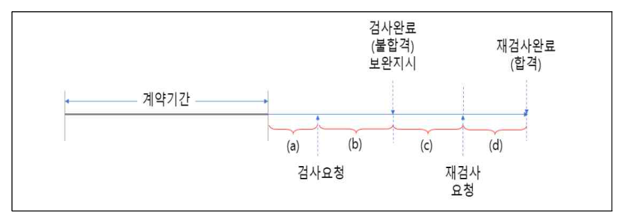

작성 기준: 업로드된 「1-1 정보화법_제도_감리」, 「1-2 사업관리」 강의자료 우선 근거, 외부지식은 보조적으로만 사용(강의자료 미수록 지침은 각 문항에 명시)
정답 출처: 2020년(제21회) 정보시스템 감리사 필기시험 문제 및 답안.pdf (원본 Bold 표시 정답 - 페이지 렌더 이미지 직접 대조 확인)
정답 신뢰도: 매우 높음 (PDF 렌더 이미지 확대 대조로 Bold 표시 검증 완료)
특이사항: 문항9는 원본에 보기 4개가 모두 Bold 처리되어 있어 전항정답 처리된 것으로 확인됨(신뢰도: 매우 높음 - 300dpi 확대 재확인)
법령 기준 주의: 본 회차는 2020년 시행분으로 출제 당시 법령·지침 기준으로 정답이 확정되어 있다. 각 문항의 「관련 이론 정리」 말미에 현행(2025년 기준) 개정사항을 별도 표기하였으므로, 현행 시험 대비 시 반드시 개정 내용을 함께 확인해야 한다.
| 번호 | 정답 | 번호 | 정답 | 번호 | 정답 |
|---|---|---|---|---|---|
| 1 | ④ | 10 | ② | 19 | ④ |
| 2 | ② | 11 | ④ | 20 | ④ |
| 3 | ④ | 12 | ① | 21 | ② |
| 4 | ④ | 13 | ① | 22 | ③ |
| 5 | ③ | 14 | ① | 23 | ① |
| 6 | ① | 15 | ② | 24 | ④ |
| 7 | ② | 16 | ① | 25 | ① |
| 8 | ② | 17 | ④ | ||
| 9 | ①,②,③,④(전항정답) | 18 | ③ |
2020년 제21회 감리 및 사업관리는 법·지침 12문항(1~12번), 사업관리 13문항(13~25번) 의 전형적 배분을 유지했다.
법·지침 영역(1~12번) 은 전자정부법 행정처분(1번), 감리원 윤리가이드(2번), HW 규모산정 지침(3번), 용역계약일반조건 지체상금(4번), 국가정보화 기본법 기본원칙(5번), 구축·운영 지침 보안대책(6번), 공공데이터 메타데이터 관리(7번), 상주감리(8번), 의무감리 대상(9번), 장애 대응(10번), 운영·유지보수 감리 점검가이드(11번), 감리기준(12번)으로, 지침·가이드의 세부 조문을 정확히 읽었는지를 묻는 유형이 압도적이다. 특히 9번은 의무감리 대상 판정 기준(사업비 구간·발주주체·사업유형)이 지침 개정과 맞물려 쟁점이 되면서 전항정답 처리되었다.
사업관리 영역(13~25번) 은 EVM(13·19번), 조직·직무설계(14번), 리스크 대응전략(15번), 품질비용(16번), PMBOK 범위관리(17번), 품질관리 도구(18번), 조달관리 투입물(20번), Herzberg 동기-위생(21번), 애자일·적응형(22번), 재무적 타당성(23번), AOA 더미활동(24번), 고진토 차트(25번)로 구성되어 PMBOK 지식영역 전반을 고르게 훑는 표준적 출제였다. 계산 문항은 13번 1개뿐이고 나머지는 개념·용어 판별이라 난이도는 평이한 편이다.
주의할 개정 포인트: 5번의 근거인 「국가정보화 기본법」은 2020년 12월 「지능정보화 기본법」으로 전부개정되었고, 9번·12번의 근거인 의무감리 대상·감리기준은 이후 수차례 개정되었다. 22번의 PMBOK은 6판 기준이며 현행 7판은 원칙(Principle) 중심으로 구조가 바뀌었다. 해당 문항의 「관련 이론 정리」에서 개정 내용을 확인할 것.
| 항목 | 내용 |
|---|---|
| 문서명 | 정보시스템 감리사 감리 및 사업관리 기출문제 해설집 - 2020년 제21회 |
| 대상 문항 | Q1 ~ Q25 (감리 및 사업관리) |
| 원본 출처 | 2020년(제21회) 정보시스템 감리사 필기시험 문제 및 답안.pdf |
| 정답 확인 방법 | PDF 페이지 렌더 이미지 대조(굵은 글씨 표시 확인), 자동 추출 결과와 교차검증 |
| 특이 문항 | 문항 9 — 전항정답 처리(①②③④ 모두 Bold) |
| 그림 포함 문항 | 문항 4 — 지체일수 산정 도해(assets/2020/q04.png) + 서술 전사 병기 |
| 근거 강의자료 | 1-1 정보화법_제도_감리(M01~M06), 1-2 사업관리(M07~M12) |
| 강의자료 미수록(외부지식 보완) 항목 | 감리원 자가점검 항목 세부명(2번 · 윤리가이드 자체는 M05 수록), AOA 더미활동(24번), 고진토 차트(25번) |
| 법령 기준 | 2020년 출제 당시 기준 + 현행(2025년) 개정사항 병기 |
'전자정부법(제58조, 제59조, 제61조)'에 따라 행정안전부장관은 감리법인이 위법한 행위를 한 경우 업무정지를 하거나 등록을 취소할 수 있다. 다음 중 반드시 등록을 취소하여야 하는 경우는?
① 전자정부법에 따른 등록기준에 미달하게 된 경우
② 전자정부법에 따른 변경사항을 신고하지 아니하거나 거짓으로 신고한 경우
③ 전자정부법을 위반하여 다른 자에게 자기의 명칭을 사용하여 정보시스템 감리를 하게 한 경우
④ 임원이 전자정부법에 따른 결격사유에 해당되고, 결격사유에 해당되는 날부터 6개월 이내에 해당 임원을 바꾸어 임명하지 않은 경우
정답 : ④번
정답 신뢰도 : 매우 높음 (원본 이미지 Bold 확인)
| 항목 | 내용 |
|---|---|
| 연도 | 2020년 (제21회) |
| 과목 | 감리 및 사업관리 |
| 문항번호 | 1번 |
| 난이도 | 중 |
| 출제주제 | 전자정부법 - 감리법인 등록취소(필요적 취소사유) |
| 연도 | 문항번호 | 핵심개념 |
|---|---|---|
| 2016년 | 14번 | 필요적 취소사유 3종 판별(가·다·마) |
| 2020년 | 1번 | 필요적 취소사유 판별(본 문항) |
★★★★ 자주 출제
감리법인에 대한 행정처분은 "반드시 등록을 취소하여야 한다"(필요적 취소) 와 "등록을 취소하거나 기간을 정하여 업무정지를 명할 수 있다"(임의적 처분) 로 이원화되어 있다. 문항은 이 중 필요적 취소사유를 묻고 있다.
전자정부법상 필요적 취소사유는 다음과 같이 열거되어 있다. ①거짓이나 그 밖의 부정한 방법으로 등록한 경우, ②법인의 임원이 결격사유에 해당하게 되었으나 그 사유 발생일부터 6개월 이내에 해당 임원을 교체하여 임명하지 아니한 경우, ③최근 3년간 3회 이상의 업무정지처분을 받은 경우, ④업무정지 기간에 정보시스템 감리를 한 경우. ②는 결격사유 있는 임원이 계속 법인을 운영하는 상태를 방치할 수 없다는 취지로, 6개월의 유예(치유) 기간을 준 뒤에도 시정하지 않으면 재량 없이 등록을 취소하도록 강제한 것이다.
본 문항의 보기 중 필요적 취소사유에 해당하는 것은 ②(임원 결격 6개월 미교체) 유형인 ④번뿐이다.
따라서 ④번이 필요적 취소사유에 해당하는 유일한 보기이며 정답이다. 나머지 ①②③은 모두 "등록을 취소하거나 6개월 이내의 기간을 정하여 업무정지를 명할 수 있다"는 임의적 처분사유에 해당한다.
등록기준(기술인력·자본금 등) 미달은 임의적 처분사유다. 일시적으로 인력이 이탈해 기준에 미달할 수 있으므로, 즉시 등록을 말소하기보다 업무정지 등으로 시정을 유도하는 것이 제도의 취지다.
변경사항 미신고·거짓신고는 행정상 신고의무 위반으로, 위반의 경중에 따라 업무정지 또는 등록취소를 선택할 수 있는 임의적 처분사유다.
명의대여(다른 자에게 자기의 명칭을 사용하여 감리를 하게 한 경우)는 위반의 정도가 무겁지만, 조문상으로는 여전히 "취소하거나 업무정지를 명할 수 있다"는 임의적 처분사유로 규정되어 있다. "무겁게 느껴지는 위반 = 필요적 취소"라고 추론하면 틀리는 대표적 함정 보기다.
감리법인 행정처분 구조 (전자정부법 제61조 기준):
| 구분 | 사유 | 처분 |
|---|---|---|
| 필요적 취소 (반드시) | 거짓이나 부정한 방법으로 등록한 경우 | 등록취소 |
| 필요적 취소 (반드시) | 임원 결격사유 발생 후 6개월 이내 미교체 | 등록취소 |
| 필요적 취소 (반드시) | 최근 3년간 3회 이상 업무정지처분을 받은 경우 | 등록취소 |
| 필요적 취소 (반드시) | 업무정지 기간에 정보시스템 감리를 한 경우 | 등록취소 |
| 임의적 처분 (할 수 있다) | 등록기준 미달 | 등록취소 또는 업무정지 |
| 임의적 처분 (할 수 있다) | 변경신고 위반(미신고·거짓신고) | 등록취소 또는 업무정지 |
| 임의적 처분 (할 수 있다) | 명의대여 | 등록취소 또는 업무정지 |
| 임의적 처분 (할 수 있다) | 거짓으로 감리보고서·시정조치확인보고서 작성 | 등록취소 또는 업무정지 |
※ 2016년 제17회 14번이 같은 조문을 물으며 "가. 최근 3년간 3회 이상 업무정지처분 / 다. 거짓·부정 등록 / 마. 업무정지 기간 중 감리" 를 필요적 취소사유(정답 ②)로 제시했다. 두 문항을 함께 보면 필요적 취소사유는 위 4종임이 확정된다.
강의자료 연계(M06 서브노트 「행정처분기준(벌칙)」): 서브노트는 행정처분기준을 위반 횟수(1차·2차·3차)별 업무정지 기간과 함께 표로 압축해 두었다. 문항이 묻는 "반드시"는 이 표 밖의 법률 본문(필요적 취소) 영역이므로, 표만 외우면 풀 수 없고 조문 구조를 함께 알아야 한다.
▶ 현행(2025년 기준) 개정사항: 감리법인 등록·행정처분의 기본 구조(필요적 취소 2종 + 임의적 처분)는 2020년 이후 현재까지 유지되고 있다. 다만 등록기준(기술인력 수·자본금)과 세부 행정처분기준(시행령 별표)은 개정 이력이 있으므로 현행 시험 대비 시 시행령 별표를 최신본으로 확인해야 한다.
감리법인은 임원 변경 시 결격사유(파산선고 미복권자, 금고 이상 형의 집행종료 후 일정기간 미경과자, 등록취소된 법인의 임원이었던 자 등) 해당 여부를 사전 확인하는 내부 절차를 둔다. 실무에서는 임원 선임 시 결격사유 확인서를 징구하고, 결격사유 발생 인지 시 6개월의 카운트다운을 관리대장으로 추적하는 것이 표준이다. 발주기관은 감리법인 선정 시 나라장터·행정안전부 공고를 통해 해당 법인의 행정처분 이력과 등록 유효 여부를 확인한다.
"반드시 ~하여야 하는 경우"와 "~할 수 있는 경우"를 구분시키는 문항은 감리 법령 영역의 최빈출 유형이다. 전자정부법뿐 아니라 소프트웨어진흥법, 개인정보보호법에서도 동일한 패턴이 반복된다. 학습 시 조문의 어미(하여야 한다 / 할 수 있다) 에 표시를 하며 읽는 습관이 필수다. 특히 "명의대여"처럼 도덕적으로 무거운 위반이 임의적 처분사유로 남아 있는 경우를 함정으로 배치하므로, 심증이 아니라 조문 어미로 판단해야 한다.
'정보시스템 감리원 윤리가이드(한국정보화진흥원, 2014)'에서 제시하고 있는 감리원 윤리성 관리 점검항목의 감리원 자가점검 항목에 대한 설명으로 가장 적절한 것은?
① 직무윤리 – 결정권과 권한을 적정하게 사용하는지 점검
② 이해상충 금지 – 감리수행중 다른 개인적인 업무 수행 등을 점검
③ 조직문화 – 잘못된 일처리에 대한 시정 등을 점검
④ 성희롱 – 감리원 상호간 무시나 폭언을 하는 행위 등을 점검
정답 : ②번
정답 신뢰도 : 매우 높음 (원본 이미지 Bold 확인)
| 항목 | 내용 |
|---|---|
| 연도 | 2020년 (제21회) |
| 과목 | 감리 및 사업관리 |
| 문항번호 | 2번 |
| 난이도 | 상 |
| 출제주제 | 정보시스템 감리원 윤리가이드 - 감리원 자가점검 항목 |
| 연도 | 문항번호 | 핵심개념 |
|---|---|---|
| 2020년 | 2번 | 감리원 자가점검 항목 매칭(본 문항) |
| (교차분석 추후 갱신) | 감리원 독립성·객관성 관련 문항 |
★★ 가끔 출제
「정보시스템 감리원 윤리가이드」의 자가점검 항목은 항목명과 그 항목이 실제로 점검하는 행위가 1:1로 대응하도록 설계되어 있다. 문항은 이 대응관계를 뒤섞어 놓고 올바른 짝을 고르게 하는 전형적인 매칭 문항이다.
② 이해상충 금지는 감리원이 감리 업무를 수행하는 동안 감리 대상 사업자와의 이해관계, 겸직, 사적 업무 수행 등으로 감리의 독립성·객관성이 훼손되지 않는지를 스스로 점검하는 항목이다. "감리수행 중 다른 개인적인 업무를 수행하는 행위"는 감리에 투입되어야 할 시간·주의를 사적 이익에 사용하는 것이자 감리 대상과의 이해충돌 위험을 만드는 행위이므로, 이해상충 금지 항목의 점검 대상으로 정확히 대응한다. 따라서 ②번이 정답이다.
"결정권과 권한을 적정하게 사용하는지"는 직무윤리가 아니라 권한 남용 금지(지위·권한의 사적 이용 금지) 계열의 점검 내용이다. 직무윤리는 감리 기준·절차 준수, 성실 수행, 비밀유지 등 직무 수행 자체의 규범을 다룬다.
"잘못된 일처리에 대한 시정"은 개인 차원의 자가점검이라기보다 조직 차원의 관리·감독(법인의 윤리성 관리) 영역에 해당한다. 조직문화 항목은 통상 상호 존중, 갑질·괴롭힘 방지, 건전한 소통 분위기 등을 점검한다.
"감리원 상호간 무시나 폭언"은 성희롱이 아니라 직장 내 괴롭힘·조직문화 항목의 점검 대상이다. 성희롱은 성적 언동으로 인한 굴욕감·혐오감 유발 행위를 다루는 별도 항목이다. 항목명과 행위를 한 칸씩 밀어 배치한 전형적 오답 설계다.
감리원 윤리성 관리 점검항목 체계(개괄):
| 구분 | 점검 주체 | 대표 점검 내용 |
|---|---|---|
| 감리원 자가점검 | 감리원 본인 | 직무윤리(기준·절차 준수, 비밀유지), 이해상충 금지(겸직·사적업무·이해관계), 권한 남용 금지, 금품·향응 수수 금지 |
| 조직(법인) 점검 | 감리법인 | 조직문화(상호 존중, 괴롭힘 방지), 성희롱 예방, 잘못된 일처리 시정·재발방지 체계 |
감리원 윤리의 3대 축:
| 축 | 의미 |
|---|---|
| 독립성(Independence) | 감리 대상 사업·사업자와 이해관계 없음 |
| 객관성(Objectivity) | 사실과 증거에 근거한 판단, 선입견 배제 |
| 성실성(Integrity) | 비밀유지, 성실 수행, 금품·향응 거절 |
강의자료 연계(M05 감리총론 3장 「11. 정보시스템 감리원 윤리 가이드(2014, NIA)」): 강의자료는 같은 가이드를 근거로 윤리강령 준수를 위협하는 요인 4종을 정리하고 있다.
| 위협 | 내용 |
|---|---|
| 이기적 위협 | 감리원 본인이 재무적 또는 기타 이해관계가 있는 경우 (암기 "이재") |
| 자기검토 위협 | 과거 본인이 판단한 사항을 다시 검토하게 되는 경우 |
| 유착 위협 | 밀접한 관계로 타인의 이익에 지나치게 동정적이 되는 경우 |
| 압력 위협 | 현실적·잠재적 협박 가능성 때문에 공정하지 못하게 되는 경우 |
본 문항이 묻는 "이해상충 금지"는 이 중 이기적 위협·유착 위협과 직결되는 항목이다. 다만 문항이 인용한 "감리원 자가점검 항목"의 세부 명칭(직무윤리·이해상충 금지·조직문화·성희롱)은 강의자료에 표로 수록되어 있지 않아, 위 자가점검 항목 정리는 감리 제도의 일반 원칙과 보기 구성을 근거로 재구성한 것이다. 학습 시에는 "이해상충 = 겸직·사적업무·이해관계" 라는 핵심 대응과 위협 4종(이기적·자기검토·유착·압력) 을 함께 잡아두면 충분하다.
▶ 현행(2025년 기준) 개정사항: 발간기관인 한국정보화진흥원(NIA)은 2020년 한국지능정보사회진흥원으로 명칭이 변경되었다. 감리원 윤리 관련 규범은 이후 「정보시스템 감리기준」 및 감리법인 자체 윤리규정으로 흡수·운영되는 경향이며, 2014년 가이드 자체를 직접 인용하는 출제는 최근 회차에서는 드물다.
감리 착수 시 감리원은 이해관계 확인서(독립성 확인서) 를 작성해 발주기관에 제출한다. 여기에는 최근 일정기간 내 해당 사업자와의 고용·자문·지분 관계, 친족 관계, 동일 사업 참여 이력 등을 기재한다. 감리 수행 중 다른 사업의 제안서 작성이나 개인 용역을 병행하는 것은 이해상충뿐 아니라 투입공수 부정 문제로도 이어지므로, 감리법인은 감리원별 투입 현황을 별도 관리한다.
윤리 영역은 출제 빈도는 낮지만 나오면 항목명↔행위 매칭 문항 형태로 고정된다. 보기 4개 중 3개는 항목명을 한 칸씩 밀어 잘못 대응시키는 방식이므로, 각 항목의 대표 키워드 1개씩만 확실히 외우면 소거법으로 풀린다(이해상충=겸직/사적업무, 성희롱=성적 언동, 조직문화=상호 존중·괴롭힘, 직무윤리=기준 준수·비밀유지).
'정보시스템 하드웨어 규모산정 지침(정보통신단체표준, TTAK.KO-10.0292/R1, 2017)'에서는 규모산정 분야를 CPU, 메모리, 디스크, 스토리지 등 4가지 분야로 정의하고 있다. 이중 OLTP와 WEB/WAS로 구분된 시스템 유형에 따라 별도로 산정하여야 하는 규모산정 분야로 적합하게 묶여진 것은?
① CPU, 메모리, 디스크
② CPU, 메모리
③ 디스크, 스토리지
④ CPU, 스토리지
정답 : ④번
정답 신뢰도 : 매우 높음 (원본 이미지 Bold 확인)
| 항목 | 내용 |
|---|---|
| 연도 | 2020년 (제21회) |
| 과목 | 감리 및 사업관리 |
| 문항번호 | 3번 |
| 난이도 | 상 |
| 출제주제 | 정보시스템 하드웨어 규모산정 지침(TTAK.KO-10.0292/R1) - 시스템 유형별 산정 분야 |
| 연도 | 문항번호 | 핵심개념 |
|---|---|---|
| 2020년 | 3번 | 유형별 별도 산정 분야(본 문항) |
| (교차분석 추후 갱신) | 규모산정 보정계수·절차 |
★★★ 보통 출제
HW 규모산정 지침은 산정 분야를 CPU·메모리·디스크·스토리지 4가지로 나누고, 각 분야별 산정식을 제시한다. 이 중 시스템 유형(OLTP형 / WEB·WAS형)에 따라 산정식과 보정계수를 달리 적용해야 하는 분야가 CPU와 스토리지다.
반면 메모리와 디스크(내장 디스크) 는 산정된 CPU 성능·설치 SW·OS 요구사항에 종속되어 계산되는 성격이 강해, 시스템 유형에 따라 별도 산정식을 두지 않는다. 따라서 CPU와 스토리지를 묶은 ④번이 정답이다.
CPU는 맞지만 메모리·디스크는 유형별 별도 산정 대상이 아니다. 메모리는 CPU 산정 결과와 설치될 SW의 요구 메모리에 따라 도출되며, 디스크는 OS·SW 설치 공간과 여유율 기준으로 산정한다.
CPU는 맞지만 메모리가 틀렸다. "CPU와 메모리는 항상 세트"라는 일반적 직관을 노린 최다 오답 보기다.
디스크·스토리지 모두를 유형별 별도 산정 대상으로 본 오답이다. 스토리지는 맞지만 디스크는 아니다. 디스크(서버 내장 디스크)와 스토리지(외장 저장장치, SAN/NAS)를 구분해야 풀 수 있다.
HW 규모산정 4대 분야와 유형별 별도 산정 여부:
| 분야 | 산정 기준(요지) | OLTP/WEB·WAS 유형별 별도 산정 |
|---|---|---|
| CPU | 트랜잭션 처리량(OLTP) / 동시사용자·요청량(WEB·WAS), 보정계수 적용 | ○ 필요 |
| 메모리 | 산정된 CPU 성능, 설치 SW·OS의 요구 메모리, 여유율 | × |
| 디스크 | OS·SW 설치 용량, 임시·로그 공간, 여유율 | × |
| 스토리지 | 업무 데이터 용량·증가율, 백업·이중화·RAID 오버헤드 | ○ 필요 |
규모산정 절차(요지):
| 단계 | 내용 |
|---|---|
| 1. 대상 시스템 정의 | 업무 유형(OLTP/WEB·WAS/기타)과 구성 확정 |
| 2. 기준값 산정 | 유형별 산정식으로 기본 소요량 계산 |
| 3. 보정계수 적용 | 피크율, 여유율, 가용성·이중화, 향후 증가율 반영 |
| 4. 검증 | 유사 사례·벤더 제시값과 대조, BMT로 확인 |
강의자료 연계(M02 감리 법·지침 「6. HW 규모산정 지침」): 강의자료는 규모산정 지침의 산정 분야와 보정계수 체계를 표로 정리하고 있으며, 2020년 회차 이전 개정본(R1, 2017)을 기준으로 서술되어 있어 본 문항과 기준이 일치한다.
▶ 현행(2025년 기준) 개정사항: TTA 표준 「정보시스템 하드웨어 규모산정 지침」은 이후 개정본이 발간되어 클라우드(IaaS/PaaS) 환경의 자원 산정, 컨테이너·가상화 환경 반영이 추가되었다. 4대 분야 구분과 유형별 CPU·스토리지 별도 산정이라는 뼈대는 유지되나, 최신 회차 대비 시에는 클라우드 전환에 따른 산정 항목(vCPU, 오브젝트 스토리지 등) 을 함께 확인해야 한다.
발주기관은 ISP·제안요청서 단계에서 HW 규모산정서를 작성해 예산을 산출한다. 감리원은 설계단계 감리에서 ①시스템 유형 구분이 실제 업무 특성과 맞는지, ②CPU 산정에 적용된 보정계수(피크율·여유율)의 근거가 문서화되어 있는지, ③스토리지 산정에 백업·RAID 오버헤드가 반영되었는지를 점검한다. 실무에서 가장 흔한 지적은 "스토리지 산정 시 원본 용량만 계산하고 백업본·이중화분을 누락"하는 사례다.
HW 규모산정 지침은 분야 4개(CPU·메모리·디스크·스토리지)를 나열하고 그중 조건에 맞는 것을 고르게 하는 유형으로 반복 출제된다. 산정식 자체를 계산시키는 경우는 드물고, "무엇이 무엇에 종속되는가" 라는 구조를 묻는다. CPU·스토리지는 업무 특성에 직접 좌우되고, 메모리·디스크는 CPU와 설치 SW에 종속된다는 축을 잡아두면 대부분의 변형 문항에 대응된다.
다음과 같이 계약기간을 경과하여 검사요청서를 제출한 경우 '용역계약 일반조건(기획재정부계약예규, 2019)'에 따라 용역수행기한 지체일수를 가장 적정하게 산정한 것은?

(그림 서술 전사) 가로 시간축 위에 계약기간이 굵은 선으로 표시되고, 계약기간 종료 시점 이후로 네 개의 구간이 순서대로 이어진다.
- (a): 계약기간 종료 → 검사요청 시점까지의 구간
- (b): 검사요청 → 검사완료(불합격), 보완지시 시점까지의 구간
- (c): 보완지시 → 재검사요청 시점까지의 구간
- (d): 재검사요청 → 재검사완료(합격) 시점까지의 구간
① (a) + (c)
② (a) + (b) + (c)
③ (a) + (c) + (d)
④ (a) + (b) + (c) + (d)
정답 : ④번
정답 신뢰도 : 매우 높음 (원본 이미지 Bold 확인)
| 항목 | 내용 |
|---|---|
| 연도 | 2020년 (제21회) |
| 과목 | 감리 및 사업관리 |
| 문항번호 | 4번 |
| 난이도 | 상 |
| 출제주제 | 용역계약 일반조건(기획재정부 계약예규) - 지체일수 산정 |
| 연도 | 문항번호 | 핵심개념 |
|---|---|---|
| 2020년 | 4번 | 기한 경과 후 검사요청 시 지체일수 구간(본 문항) |
| 2025년 | 3번 | 용역계약일반조건 조항 판별 |
★★★★ 자주 출제
지체일수 산정의 핵심 원칙은 "계약상대자가 계약기간 내에 검사요청서를 제출했는가" 이다.
본 문항은 "계약기간을 경과하여 검사요청서를 제출한 경우" 를 명시하고 있으므로 후자에 해당한다. 따라서 계약기간 종료 시점부터 재검사완료(합격) 시점까지의 모든 구간 (a)+(b)+(c)+(d) 전부가 지체일수가 되며, ④번이 정답이다.
(a)+(c)는 계약기간 내에 검사요청서를 제출한 경우의 산정 방식과 유사한 구조다(발주기관의 검사 소요기간 (b)·(d)는 제외, 계약상대자 귀책인 보완기간 (c)만 산입). 그러나 본 문항은 기한을 경과한 사례이므로 이 방식이 적용되지 않는다. 문제의 전제조건을 놓치면 고르게 되는 가장 매력적인 오답이다.
(d)만 제외한 형태로, 재검사에 소요된 기간을 발주기관 부담으로 본 것이다. 기한 경과 사례에서는 최종 합격일까지 전부 산입되므로 틀렸다.
(b)만 제외한 형태로, 최초 검사 소요기간을 발주기관 부담으로 본 것이다. 역시 기한 경과 사례에는 적용되지 않는다.
지체일수 산정 원칙 (용역계약 일반조건 기준):
| 상황 | 지체일수 산정 |
|---|---|
| 계약기간 내 검사요청 + 검사 합격 | 지체 없음(0일) |
| 계약기간 내 검사요청 + 불합격·보완 후 합격 | 보완에 소요된 기간(보완지시일 ~ 재검사요청일)만 산입 |
| 계약기간 경과 후 검사요청 | 계약기간 종료 다음 날 ~ 최종 검사 합격일 전 기간 산입 |
지체상금 계산 구조:
| 항목 | 내용 |
|---|---|
| 지체상금 | 계약금액 × 지체상금률 × 지체일수 |
| 지체상금률 | 용역 계약의 경우 계약예규에서 정한 요율 적용(예: 1일당 1000분의 1.25 등, 계약유형별 상이) |
| 공제 대상 기간 | 불가항력, 발주기관 책임 있는 사유, 관계법령 개정 등 계약상대자 책임 없는 사유로 지연된 기간 |
강의자료 연계(M02 감리 법·지침 「12. 용역계약일반조건 - 지체상금」): 강의자료는 지체상금 산정 Case를 여러 개(Case 1~4)로 나누어 도식과 함께 설명하고 있으며, 본 문항과 동일한 "기한 경과 후 검사요청" 케이스가 포함되어 있다. 감리 및 사업관리 과목에서 지체상금 Case 도해는 반드시 눈으로 익혀 두어야 할 자료다.
▶ 현행(2025년 기준) 개정사항: 「(계약예규) 용역계약일반조건」은 2024.12.24. 개정본이 최신이며, 지체일수 산정의 기본 원칙(계약기간 내 검사요청 여부에 따른 이원화)은 그대로 유지되고 있다. 다만 지체상금률과 과업내용 변경·계약금액 조정 절차(과업심의위원회 관련) 규정이 개정되었으므로 수치 암기 시 최신본을 확인해야 한다.
SI 사업 종료 시 계약상대자는 계약기간 만료일 이전에 반드시 검사요청서(검수요청서)를 접수시키는 것이 실무의 철칙이다. 산출물이 다소 미비하더라도 기한 내에 검사요청을 접수해 두면, 이후 보완에 걸린 기간만 지체일수로 산입되어 지체상금 부담이 크게 줄어든다. 반대로 "완벽하게 만들어서 내자"며 기한을 넘기면 그 이후 전 기간이 지체일수가 된다. 감리원은 종료단계 감리에서 검사요청서 접수일자와 계약기간 만료일을 대조하고, 지체일수 산정 근거의 적정성을 점검한다.
지체상금·지체일수는 도해와 함께 구간을 고르게 하는 유형으로 고정 출제된다. 판별 순서는 항상 동일하다. ①검사요청이 계약기간 내인가 밖인가를 먼저 확인 → ②기한 내면 "보완기간만", 기한 밖이면 "전부" → ③불가항력·발주기관 귀책 구간이 있으면 공제. 이 3단계만 외우면 어떤 도해가 나와도 풀린다.
다음 중 국가와 지방자치단체가 담당해야할 국가정보화 추진의 기본원칙과 가장 거리가 먼 것은?
① 국가정보화 추진 과정에서 민간과의 협력 체계를 마련하는 등 사회 각 계층의 다양한 의견을 수렴하도록 노력하여야 한다.
② 국가정보화 추진 과정에서 정보화의 역기능을 방지하기 위한 정보보호, 개인정보 보호 등의 대책을 마련하여야 한다.
③ 국가정보화를 추진하는 경우에는 민간을 포함하는 총괄적 역할에 충실하여야 하며 민간의 자유와 창의를 존중하고 지원하여야 한다.
④ 시책 추진에 필요한 재원을 마련하기 위하여 노력하여야 한다.
정답 : ③번
정답 신뢰도 : 매우 높음 (원본 이미지 Bold 확인)
| 항목 | 내용 |
|---|---|
| 연도 | 2020년 (제21회) |
| 과목 | 감리 및 사업관리 |
| 문항번호 | 5번 |
| 난이도 | 중 |
| 출제주제 | 국가정보화 기본법 - 국가정보화 추진의 기본원칙 |
| 연도 | 문항번호 | 핵심개념 |
|---|---|---|
| 2020년 | 5번 | 국가정보화 추진 기본원칙(본 문항) |
| (교차분석 추후 갱신) | 지능정보화 기본법 정의·계획 |
★★★★ 자주 출제
「국가정보화 기본법」 제3조(국가정보화 추진의 기본원칙)는 국가·지방자치단체의 역할을 규정하면서, 민간 부문이 주도하고 국가는 이를 보완·지원한다는 원칙을 명시한다. 조문의 표현은 "국가정보화를 추진하는 경우 민간이 주도하고 국가는 보완적 역할에 충실하여야 하며, 민간의 자유와 창의를 존중하고 지원하여야 한다"는 취지다.
보기 ③은 이 조문의 뒷부분("민간의 자유와 창의를 존중하고 지원")은 그대로 두면서, 앞부분의 "보완적 역할"을 "민간을 포함하는 총괄적 역할"로 뒤집어 놓았다. 국가가 민간까지 총괄한다는 것은 민간 주도·국가 보완이라는 기본원칙과 정면으로 배치되며, 뒤에 이어지는 "민간의 자유와 창의를 존중"과도 논리적으로 모순된다. 따라서 기본원칙과 가장 거리가 먼 것은 ③번이다.
사회 각 계층의 다양한 의견 수렴과 민관 협력체계 마련은 기본원칙에 명시된 국가·지자체의 책무다. 옳은 설명이다.
정보화 역기능(정보격차, 사생활 침해, 사이버 침해 등) 방지를 위한 정보보호·개인정보 보호 대책 마련은 기본원칙의 핵심 항목이다. 옳은 설명이다.
시책 추진에 필요한 재원 확보 노력 역시 국가·지자체의 책무로 규정되어 있다. 옳은 설명이다.
국가정보화 추진 기본원칙(제3조) 요지:
| 항목 | 내용 |
|---|---|
| 민간 주도·국가 보완 | 민간이 주도하고 국가는 보완적 역할, 민간의 자유와 창의 존중·지원 |
| 의견 수렴 | 민관 협력체계 마련, 사회 각 계층의 다양한 의견 수렴 |
| 역기능 방지 | 정보보호·개인정보 보호 등 대책 마련 |
| 정보격차 해소 | 모든 국민이 정보에 접근·활용할 수 있도록 지원 |
| 재원 확보 | 시책 추진에 필요한 재원 마련 노력 |
| 국제협력 | 정보화 관련 국제협력 증진 |
▶ 현행(2025년 기준) 개정사항 — 중요: 「국가정보화 기본법」은 2020년 6월 「지능정보화 기본법」으로 전부개정되어 2020년 12월 10일 시행되었다. 본 문항 출제 시점(2020년 시행 회차)은 개정 전 「국가정보화 기본법」 기준이다.
| 구분 | 국가정보화 기본법(舊) | 지능정보화 기본법(現) |
|---|---|---|
| 법명 | 국가정보화 기본법 | 지능정보화 기본법 |
| 중심 개념 | 국가정보화, 정보통신 | 지능정보화, 지능정보기술·지능정보사회 |
| 기본계획 | 국가정보화 기본계획(5년) | 지능정보사회 종합계획(3년) |
| 신설 영역 | - | 데이터 활용, 지능정보기술 안전성·신뢰성, 지능정보사회 윤리, 일자리·사회 변화 대응 |
| 기본원칙 | 민간 주도·국가 보완 | 동일 취지 유지(민간 주도, 국가·지자체 보완적 지원) |
즉 "민간 주도, 국가는 보완적 역할"이라는 본 문항의 정답 논리는 현행법에서도 그대로 유효하나, 법명·계획 명칭·주기는 반드시 현행 기준으로 갱신해 외워야 한다.
강의자료 연계(M01 정보화법제도·전자정부법): 강의자료는 정보화 관련 법체계를 지능정보화 기본법 중심으로 정리하고 있어, 2020년 회차의 舊 법명과 표기 차이가 있다. 본 문항 학습 시 법명 차이에 유의할 것.
지자체가 스마트시티 사업을 추진할 때, 민간 기업이 이미 제공 중인 서비스 영역을 지자체가 직접 구축·운영하려 하면 "민간 주도·국가 보완" 원칙 위반 소지가 제기된다. 실무에서는 공공은 데이터·인프라·표준을 제공하고 서비스는 민간이 개발하는 방식(개방형 플랫폼)으로 설계해 원칙 충돌을 피한다. 감리원은 사업계획 검토 시 공공-민간 역할 분담이 이 원칙에 부합하는지 확인한다.
기본원칙 조문은 "민간 주도 / 국가 보완"의 방향을 뒤집어 놓는 방식으로만 출제된다고 봐도 무방하다. 보기에 "국가가 총괄", "국가가 주도", "민간을 포함하여 관리"류 표현이 보이면 그것이 오답이다. 반대로 "민간의 자유와 창의 존중", "민간 주도", "보완적 역할"은 항상 옳은 방향이다. 조문 전체를 외울 필요 없이 방향성 키워드만 잡으면 된다.
'행정기관 및 공공기관 정보시스템 구축‧운영 지침(2019)'에서 요구하는 것으로서 정보화 사업 발주, 관리, 운영 등에 참여하는 사업자가 준수하여야 하는 주요 보안대책과 가장 거리가 먼 것은?
① 개발시스템과 운영시스템의 가상화 수준 분리
② 외부 용역업체의 노트북 등에 대해 반입•반출을 제한
③ 외부 용역업체의 인터넷 사용 및 인가되지 않은 USB 등 휴대용 저장매체 사용을 제한
④ 운영시스템 접근에 필요한 작업용 PC를 별도로 마련하여 외부 용역업체의 운영시스템 접근을 제한
정답 : ①번
정답 신뢰도 : 매우 높음 (원본 이미지 Bold 확인)
| 항목 | 내용 |
|---|---|
| 연도 | 2020년 (제21회) |
| 과목 | 감리 및 사업관리 |
| 문항번호 | 6번 |
| 난이도 | 중 |
| 출제주제 | 행정기관 및 공공기관 정보시스템 구축·운영 지침 - 사업자 준수 보안대책 |
| 연도 | 문항번호 | 핵심개념 |
|---|---|---|
| 2020년 | 6번 | 사업자 준수 보안대책(본 문항) |
| 2025년 | 1번 | 구축·운영 지침 장애 대응 활동 |
★★★★★ 매우 자주 출제
구축·운영 지침이 사업자에게 요구하는 보안대책은 "외부 인력·매체·경로를 통한 유출 차단" 에 초점이 맞춰져 있으며, 개발환경과 운영환경의 분리에 대해서는 가상화 수준의 논리적 분리가 아니라 물리적 분리(별도 망·별도 시스템) 를 원칙으로 한다.
보기 ①은 "가상화 수준 분리"라고 한정하여, 하나의 물리 인프라 위에서 가상머신 단위로만 나누는 것을 보안대책으로 제시하고 있다. 가상화 기반 논리 분리는 하이퍼바이저 취약점, 공유 스토리지·네트워크를 통한 우회 접근 가능성이 남아 있어 공공 정보시스템의 개발·운영 분리 요건을 충족하지 못한다. 따라서 지침이 요구하는 주요 보안대책과 가장 거리가 먼 것은 ①번이다.
②③④는 모두 지침이 명시적으로 요구하는 사업자 준수 보안대책이다.
외부 용역업체 인력이 반입·반출하는 노트북·저장매체 등 정보기기를 통제하는 것은 지침의 대표적 요구사항이다. 반입 시 등록·검사, 반출 시 자료 삭제 확인 등의 절차를 둔다.
용역업체의 인터넷 사용 제한과 인가되지 않은 USB 등 휴대용 저장매체 사용 금지는 자료 유출의 주된 경로를 차단하는 기본 대책이다. 지침이 요구하는 사항이 맞다.
운영시스템 접근용 작업 PC를 별도로 마련해 외부 인력의 직접 접근을 제한하는 것은 운영환경 보호의 핵심 통제로, 지침이 요구하는 사항이다.
정보화사업 참여 사업자 보안대책(요지):
| 통제 영역 | 주요 요구사항 |
|---|---|
| 환경 분리 | 개발시스템과 운영시스템의 물리적 분리(별도 망·별도 시스템), 개발데이터에 실 운영데이터 사용 금지(부득이 시 비식별 처리) |
| 인력 통제 | 보안서약서 징구, 출입 통제, 인력 변경 시 계정·권한 회수 |
| 매체 통제 | 노트북·저장매체 반입·반출 등록·검사, 인가되지 않은 USB 사용 금지 |
| 네트워크 통제 | 용역업체의 인터넷 사용 제한, 외부 반출 경로(메일·웹하드) 차단 |
| 접근 통제 | 운영시스템 접근용 별도 작업 PC 운영, 계정 최소권한·접근기록 보관 |
| 산출물 보안 | 소스코드·설계서 외부 반출 금지, 종료 시 자료 반납·삭제 확인 |
▶ 현행(2025년 기준) 개정사항: 「행정기관 및 공공기관 정보시스템 구축·운영 지침」은 매년 개정되며(2024년, 2025년 연속 개정), 클라우드 전환(공공 클라우드 이용) 확산에 따라 클라우드 환경에서의 개발·운영 환경 분리 기준, 민간 클라우드 이용 시 보안인증(CSAP) 요구, 재택·원격 개발 시 보안대책 등이 추가·정비되었다. 다만 "개발·운영 환경은 분리하고, 외부 인력의 매체·인터넷·운영시스템 직접 접근은 통제한다" 는 뼈대는 유지되고 있다.
강의자료 연계(M03 감리지침 2장): 강의자료는 구축·운영 지침의 보안 요구사항을 정보보호·개인정보 보호 점검항목과 함께 정리하고 있다.
공공 SI 사업 현장에서는 개발실(외부 인력 상주)과 운영실을 물리적으로 분리하고, 개발실 PC는 인터넷이 차단된 내부망에만 연결한다. 소스코드 반출이 필요한 경우 보안담당자 승인 후 전용 반출 절차(승인·기록·암호화)를 거친다. 감리원은 착수·중간 감리에서 ①개발망·운영망 분리 구성도, ②보안서약서 징구 현황, ③반입·반출 대장, ④운영시스템 접근 계정 목록과 접근기록을 증적으로 요구해 점검한다.
보안대책 문항은 "물리적 분리 vs 논리적(가상화) 분리"를 뒤바꾸는 방식이 정형화된 함정이다. 공공 정보시스템 관련 지침에서는 개발·운영 분리, 망분리(업무망·인터넷망) 모두 물리적 분리를 원칙으로 하고 논리적 분리는 예외·보완 수단으로 본다. 보기에 "가상화 수준", "논리적으로 분리"가 등장하면 우선 의심할 것.
공공기관 데이터베이스의 메타데이터를 관리하기 위해 업무담당자가 수행하는 업무와 가장 거리가 먼 것은?
① 소관 공공데이터베이스 메타데이터의 표준 준수 여부 점검 및 개선 조치
② 기관메타시스템 보급 확대 추진을 위한 공통 기관메타시스템의 개발 보급
③ 소관 공공데이터베이스의 메타데이터 변경사항 발생 시 최신 정보로 현행화
④ 기관메타시스템 내 소관 공공데이터베이스의 메타데이터 표준 관리 항목 정보 등록
정답 : ②번
정답 신뢰도 : 매우 높음 (원본 이미지 Bold 확인)
| 항목 | 내용 |
|---|---|
| 연도 | 2020년 (제21회) |
| 과목 | 감리 및 사업관리 |
| 문항번호 | 7번 |
| 난이도 | 중 |
| 출제주제 | 공공데이터 관리지침 - 메타데이터 관리 업무담당자 역할 |
| 연도 | 문항번호 | 핵심개념 |
|---|---|---|
| 2020년 | 7번 | 메타데이터 관리 주체별 역할(본 문항) |
| (교차분석 추후 갱신) | 공공데이터 품질관리 |
★★★ 보통 출제
메타데이터 관리 체계는 총괄기관(범정부 차원) 과 기관 내 업무담당자(개별 시스템 차원) 의 역할이 명확히 나뉘어 있다.
보기 ②의 "공통 기관메타시스템의 개발 보급"은 개별 기관의 업무담당자가 수행할 수 있는 일이 아니라 총괄기관의 역할이다. 따라서 업무담당자의 업무와 가장 거리가 먼 것은 ②번이다.
소관 DB 메타데이터가 표준(메타데이터 표준 관리 항목)을 준수하는지 점검하고 미준수 항목을 개선하는 것은 업무담당자의 기본 업무다.
DB 구조·항목·소유부서 등 변경사항 발생 시 메타데이터를 지체 없이 최신 정보로 갱신(현행화)하는 것은 메타데이터 품질 유지의 핵심으로, 업무담당자가 직접 수행한다.
기관메타시스템에 소관 DB의 메타데이터 표준 관리 항목 정보를 등록하는 것은 업무담당자의 가장 기본적인 업무다.
메타데이터 관리 역할 분담:
| 주체 | 역할 |
|---|---|
| 총괄기관(행정안전부 등) | 메타데이터 표준 제정·개정, 공통 기관메타시스템 개발·보급, 범정부 메타관리시스템 운영, 이행실태 점검 |
| 기관 총괄 담당 | 기관 내 메타데이터 관리 계획 수립, 소관 DB 목록 관리, 기관 차원 품질 점검 |
| 업무담당자 | 소관 DB 메타데이터 등록 · 현행화 · 표준 준수 점검·개선 |
메타데이터의 개념·유형:
| 구분 | 내용 |
|---|---|
| 정의 | 데이터를 설명하는 데이터(데이터의 구조·의미·이력·소유 정보) |
| 기술(Descriptive) | 데이터 식별·검색을 위한 정보(명칭, 설명, 키워드) |
| 구조(Structural) | 데이터 구성·관계 정보(테이블·칼럼·관계) |
| 관리(Administrative) | 생성·변경 이력, 소유·관리 부서, 접근권한, 보존기간 |
강의자료 연계(M02 감리 법·지침 「3. 공공데이터 관리지침」, M03 감리지침 2장): 강의자료는 공공데이터 관리지침과 행정정보 DB 표준화 지침을 다루며, 메타데이터 표준 관리 항목과 관리 체계를 정리하고 있다.
▶ 현행(2025년 기준) 개정사항: 공공데이터 관련 제도는 「공공데이터의 제공 및 이용 활성화에 관한 법률」과 「데이터기반행정 활성화에 관한 법률」 체계로 정비되었고, 범정부 데이터 통합·연계 플랫폼(공공데이터포털, 데이터기반행정 플랫폼) 중심으로 메타데이터 관리가 고도화되었다. 총괄기관이 표준·시스템을 제공하고 기관 담당자가 등록·현행화를 책임진다는 역할 분담 구조는 동일하게 유지된다.
각 기관 정보화담당관실은 소관 DB 목록을 유지하고, DB 구조 변경(테이블·칼럼 추가 등)이 발생하면 변경관리 절차의 일부로 메타데이터 현행화를 수행한다. 실무에서 가장 흔한 문제는 "시스템은 고도화되었는데 메타데이터는 최초 구축 시점 그대로"인 경우로, 감리원은 운영·유지보수 감리에서 최근 변경 이력과 메타데이터 갱신일자를 대조해 현행화 여부를 점검한다.
"누가 하는 일인가(주체 판별)" 를 묻는 유형이다. 이 유형은 지침·가이드 영역 전반에서 반복되며, 판별 기준은 항상 같다. 표준 제정 · 시스템 개발·보급 · 전체 실태 점검 → 총괄기관, 등록 · 현행화 · 자체 점검 → 개별 담당자. 보기 중 "보급", "제정", "구축·운영(범정부)"이 들어간 것은 담당자 업무가 아니라고 보면 거의 맞는다.
다음 상주감리에 대한 설명 중 옳지 않은 것은?
① 감리 업무 수행 결과를 정기적으로 발주자에게 보고하여야 한다.
② 상주감리원은 필요한 경우 단계별 감리의 감리원으로 참여할 수 있다.
③ 정기 감리 이외의 추가 감리로서 발주자를 지원하는 형태로 수행된다.
④ 현장에 상주하거나 주기적으로 투입되어 감리 업무를 수행한다.
정답 : ②번
정답 신뢰도 : 매우 높음 (원본 이미지 Bold 확인)
| 항목 | 내용 |
|---|---|
| 연도 | 2020년 (제21회) |
| 과목 | 감리 및 사업관리 |
| 문항번호 | 8번 |
| 난이도 | 중 |
| 출제주제 | 정보시스템 감리기준 - 상주감리 |
| 연도 | 문항번호 | 핵심개념 |
|---|---|---|
| 2020년 | 8번 | 상주감리 설명 중 옳지 않은 것(본 문항) |
| 2021년 | 13번 | 감리기준 판별 — 상주감리원의 단계별 감리 참여 |
★★★★ 자주 출제
상주감리는 단계별(정기) 감리와 별도로 추가 수행되는 감리로, 감리원이 사업 현장에 상주하거나 주기적으로 투입되어 발주자를 상시 지원하는 형태다.
핵심은 상주감리원과 단계별 감리 감리원의 겸직이 제한된다는 점이다. 상주감리원은 사업 현장에서 사업자와 밀착해 상시 지원·조정 역할을 수행하므로, 동일 인물이 단계별 감리의 감리원으로 참여하면 자신이 관여한 결과를 자신이 평가하는 자기감리(self-review) 상태가 되어 감리의 독립성·객관성이 훼손된다. 따라서 "상주감리원은 필요한 경우 단계별 감리의 감리원으로 참여할 수 있다"는 ②번 설명이 옳지 않으며 정답이다.
※ 유의: 2021년 제22회 13번에도 "상주감리원은 단계별 감리의 감리원으로 참여할 수 있다"는 취지의 보기가 출제되어 옳지 않은 설명으로 처리된 바 있다. 두 회차에서 일관된 기준이 적용되었음을 확인할 수 있다.
상주감리는 발주자 지원을 목적으로 하므로, 수행 결과를 정기적으로 발주자에게 보고하는 것은 상주감리의 기본 의무다. 옳은 설명이다.
상주감리는 감리기준상 정기(단계별) 감리에 추가하여 수행하는 감리이며, 발주자의 사업관리를 지원하는 성격을 갖는다. 옳은 설명이다.
현장 상주 또는 주기적 투입 형태로 수행되는 것이 상주감리의 정의적 특징이다. 옳은 설명이다.
단계별(정기) 감리 vs 상주감리:
| 구분 | 단계별(정기) 감리 | 상주감리 |
|---|---|---|
| 성격 | 감리기준상 필수 감리(1~3단계) | 정기 감리에 추가하는 감리 |
| 시점 | 요구정의·설계·종료 등 단계별 시점 | 사업 기간 중 상시(상주) 또는 주기적 투입 |
| 목적 | 산출물·진척의 적정성 점검, 시정조치 요구 | 발주자 상시 지원, 이슈 조기 발견·조정 |
| 보고 | 감리수행결과보고서 | 정기 보고(발주자) |
| 겸직 | — | 단계별 감리 감리원과 겸직 제한 |
상주감리 추가 검토가 필요한 경우(예시):
| 상황 | 취지 |
|---|---|
| 사업 규모가 크고 기간이 긴 경우 | 단계별 시점 사이의 공백 보완 |
| 다수 사업자·복합 사업 구조 | 이해관계 조정·통합 관리 필요 |
| 대기업 참여제한 등으로 관리 위험이 큰 경우 | 발주자 관리역량 보완 |
강의자료 연계(M05 감리총론 3장, M06 서브노트): 강의자료는 감리 유형(단계별 감리·상주감리)과 감리원 구분을 정리하고 있으며, 상주감리의 성격과 감리원 겸직 제한을 다룬다.
▶ 현행(2025년 기준) 개정사항: 「정보시스템 감리기준」(행정안전부 고시)은 이후 개정되었으나 상주감리의 정의(추가 감리·발주자 지원)와 단계별 감리 감리원 겸직 제한 취지는 유지되고 있다. 감리대가·감리원 구분 기준은 개정 이력이 있으므로 수치는 최신 고시로 확인할 것.
대규모 차세대 시스템 구축 사업에서는 단계별 감리(3회)만으로는 월 단위로 쏟아지는 이슈를 따라잡기 어려워 상주감리를 병행한다. 상주감리원은 주간 회의에 참석해 진척·이슈를 확인하고 발주자에게 주간·월간 보고를 올린다. 이때 상주감리원과 단계별 감리 수행 인력을 다른 사람으로 편성하는 것이 감리법인의 표준 실무이며, 감리계획서 검토 시 발주기관이 이를 확인한다.
상주감리 문항의 정답은 거의 항상 "겸직 가능하다" 는 취지의 보기다. 감리 영역 전반에서 독립성 훼손 = 오답이라는 원칙이 관통하므로, 보기 중 "같은 사람이 ~도 할 수 있다", "동일 감리법인이 ~도 수행할 수 있다"류 표현이 보이면 우선 의심하면 된다. 반대로 "정기 보고", "발주자 지원", "추가 감리"는 상주감리의 정의적 특징으로 항상 옳다.
다음 중 '정보시스템감리 발주관리가이드(2016)'에서 제시하는 의무감리 대상이 아닌 것은?
① 사립대학에서 6억원 규모의 학사정보시스템을 개발하고 있다.
② BPR 2억원 그리고 관련 SW개발 4억원 등 총 6억원 규모의 사업을 통합발주하여 진행하고 있다.
③ 공공기관에서 발주한 10억원 규모 SW개발사업을 국외 현지 업체가 수행하고 있다.
④ 공공기관 내부용으로 SW개발 없는 8억원 규모의 DB구축사업을 진행하고 있다.
정답 : ①번, ②번, ③번, ④번 (전항정답 처리)
정답 신뢰도 : 매우 높음 (원본 답안 이미지에서 ①②③④ 네 보기가 모두 Bold 처리되어 있음을 300dpi 확대 재확인. 실제 시험 시행기관이 이의제기 심사 등을 거쳐 전항정답으로 처리한 것으로 판단됨)
| 항목 | 내용 |
|---|---|
| 연도 | 2020년 (제21회) |
| 과목 | 감리 및 사업관리 |
| 문항번호 | 9번 |
| 난이도 | 상 |
| 출제주제 | 정보시스템감리 발주관리가이드(2016) - 의무감리 대상 판정 |
| 연도 | 문항번호 | 핵심개념 |
|---|---|---|
| 2016년 | 11번 | 정보화사업 중 의무 감리 대상이 아닌 것(사업비 산정 시 단순 구입비 제외) |
| 2020년 | 9번 | 의무감리 대상 판정 경계 사례(본 문항, 전항정답) |
★★★★★ 매우 자주 출제
본 문항은 원본 답안에서 네 보기가 모두 Bold로 표시되어 있어 전항정답으로 처리된 것으로 확인된다. 각 보기가 "의무감리 대상이 아닌 것"에 해당한다고 볼 수 있는 근거는 다음과 같다.
의무감리 대상 판정은 ①발주주체가 대상기관인가 → ②사업유형이 대상인가 → ③사업비가 기준금액 이상인가 의 3단계를 모두 통과해야 한다. 한 단계라도 걸리면 의무감리 대상이 아니다.
이처럼 네 보기 모두 "대상이 아니다"라고 볼 근거가 성립하여, 시행기관이 정답을 하나로 특정할 수 없다고 판단해 전항정답 처리한 것으로 보인다. 학습 시에는 정답 자체보다 의무감리 판정 3요건과 각 요건의 경계 사례를 정리하는 데 초점을 두어야 한다.
본 문항은 전항정답 처리되어 별도의 오답 보기가 존재하지 않는다. 대신 각 보기가 의무감리 판정의 어느 요건에서 걸리는지를 정리하면 다음과 같다.
발주주체 요건에서 탈락 — 사립대학은 감리 대상기관(국가기관·지자체·공공기관)에 해당하지 않음.
사업비 요건 해석 쟁점 — BPR(컨설팅) 제외 시 SW개발분 4억원으로 기준 미달. 통합발주 총액 인정 여부가 다툼의 대상.
수행 주체·장소 쟁점 — 국외 현지 업체 수행 사업의 감리 대상 포함 여부에 대한 명확한 규정 부재.
사업유형 요건 쟁점 — SW개발이 없는 순수 DB구축사업의 감리 대상 여부. 사업비 산정 시 단순 구입비 제외 원칙과 연동.
의무감리 대상 판정 3요건:
| 요건 | 내용 | 탈락 사례 |
|---|---|---|
| ① 발주주체 | 국가기관, 지방자치단체, 공공기관(공공기관운영법상) 등 | 사립대학, 순수 민간기업 |
| ② 사업유형 | 정보시스템의 구축·운영 관련 사업(SW개발·고도화 등) | 단순 HW 구매, 순수 컨설팅(BPR/ISP), 논란: SW개발 없는 DB구축 |
| ③ 사업비 | 기준금액 이상(가이드 기준 시점의 금액 적용). HW·SW 단순 구입비는 제외하고 산정 | 기준금액 미달 |
의무감리 대상 판정 시 자주 나오는 함정:
| 함정 유형 | 판단 요령 |
|---|---|
| 사업비에 HW 구입비 포함 | 단순 구입비 제외하고 다시 계산 |
| 통합발주(컨설팅+개발) | 감리 대상 유형에 해당하는 부분의 금액으로 판단(해석 쟁점) |
| 대국민 서비스 여부 | 대국민 서비스용은 별도(더 낮은) 기준금액 적용 가능 |
| 발주주체가 학교·협회 등 | 공공기관 지정 여부 확인이 우선 |
강의자료 연계(M06 서브노트 「2. 감리 법체계·의무감리 대상」): 서브노트는 의무감리 대상 판정 기준을 표로 압축해 두었으며, 사업비 산정 시 제외 항목과 대상기관 범위를 정리하고 있다. 본 문항 학습 시 반드시 함께 볼 것.
▶ 현행(2025년 기준) 개정사항 — 중요: 의무감리 대상 기준은 2016년 가이드 이후 여러 차례 정비되었다. 특히 사업비 기준금액, 대국민 서비스 사업의 별도 기준, 감리 대상 사업유형의 범위가 조정되었으므로, 현행 시험 대비 시 최신 「전자정부법 시행령」과 「정보시스템 감리기준」의 대상·기준금액을 반드시 확인해야 한다. 2020년 회차의 금액·기준을 그대로 현행에 적용하면 안 된다.
발주기관은 사업계획 수립 단계에서 의무감리 대상 여부 판정표를 작성해 예산에 감리비를 반영한다. 판정이 애매한 경우(통합발주, 혼합 사업유형)에는 행정안전부 또는 감리 관련 전문기관에 유권해석을 요청하는 것이 실무 관행이다. 의무감리 대상인데 감리를 누락하면 사업 종료 후 지적 대상이 되고, 반대로 대상이 아닌데 감리비를 편성하면 예산 집행 적정성 문제가 제기될 수 있어 판정의 정확성이 중요하다.
의무감리 대상 판정은 감리 법·제도 영역의 최빈출 주제이며, 사례 4개를 제시하고 대상/비대상을 고르게 하는 형태로 고정 출제된다. ①발주주체 → ②사업유형 → ③사업비의 3단계 체크리스트를 순서대로 적용하는 훈련이 필요하다. 본 문항처럼 경계 사례가 여럿 섞이면 전항정답·복수정답이 나올 수 있으므로, "가장 명확하게 탈락하는 요건이 무엇인지" 를 우선 찾는 접근이 유리하다(본 문항에서는 ①의 사립대학이 가장 명확한 탈락 사례다).
'전자정부법'에 따라 중앙행정기관등의 장이 해당 기관의 정보시스템에 장애가 발생하였을 때 취해야하는 조치와 가장 거리가 먼 것은?
① 관계기관에 장애사실의 즉시 통보
② 장애원인 책임자 징계 및 재발방지
③ 해당 정보시스템의 신속한 복구 또는 대체
④ 인터넷 등을 통한 장애사실 및 그 복구사실 공표
정답 : ②번
정답 신뢰도 : 매우 높음 (원본 이미지 Bold 확인)
| 항목 | 내용 |
|---|---|
| 연도 | 2020년 (제21회) |
| 과목 | 감리 및 사업관리 |
| 문항번호 | 10번 |
| 난이도 | 중 |
| 출제주제 | 전자정부법 - 정보시스템 장애 발생 시 조치사항 |
| 연도 | 문항번호 | 핵심개념 |
|---|---|---|
| 2020년 | 10번 | 장애 발생 시 조치(본 문항) |
| 2025년 | 1번 | 개정 지침상 장애 대응 활동 판별 |
★★★★ 자주 출제
전자정부법상 정보시스템 장애 대응 조치는 "서비스 연속성 확보와 이용자 보호" 를 목적으로 설계되어 있으며, 조문이 요구하는 조치는 크게 다음 세 가지다.
반면 ②의 "장애원인 책임자 징계"는 전자정부법이 정하는 장애 대응 조치가 아니다. 징계는 「국가공무원법」·「지방공무원법」 등 별도 법령에 따른 인사·감사 절차이며, 사후에 원인 규명 결과에 따라 별도로 진행될 사안이다. 장애 대응 조치의 목적은 책임 추궁이 아니라 복구와 고지이므로, 성격이 다른 ②번이 가장 거리가 멀며 정답이다.
장애 발생 시 관계기관(행정안전부, 관계 중앙행정기관 등)에 즉시 통보하는 것은 조문에 명시된 조치다. 옳은 설명이다.
해당 정보시스템의 신속한 복구 또는 대체 수단 가동은 장애 대응의 핵심 조치다. 옳은 설명이다.
인터넷 등을 통해 장애사실과 복구사실을 공표하는 것은 전자정부 서비스 이용자에 대한 고지 의무로 조문에 규정되어 있다. 옳은 설명이다.
정보시스템 장애 대응 체계:
| 시점 | 조치 |
|---|---|
| 사전(평상시) | 장애 예방·대응계획 수립(대응절차·비상연락체계·복구목표시간 RTO), 백업·재해복구체계 구축, 모의훈련 |
| 발생 시 | ①관계기관 즉시 통보 → ②신속한 복구 또는 대체 → ③장애사실·복구사실 공표 |
| 사후 | 원인 분석(필요 시 외부 전문가 활용), 재발방지대책 수립, 사후보고서 작성 / 징계 등은 별도 법령 절차 |
장애등급 분류(행정정보 DB 표준화지침 계열):
| 등급 | 성격 | 복구목표 |
|---|---|---|
| A(긴급) | 대국민 서비스 전면 중단 등 | 최단시간 내 복구 |
| B(보통) | 일부 기능 장애 | 정해진 목표시간 내 복구 |
| C(주의) | 성능 저하·경미한 오류 | 계획적 조치 |
강의자료 연계(M01 정보화법제도·전자정부법, M06 서브노트): 강의자료는 행정정보 DB 표준화지침상 장애요인(운영실수, 저장소 파괴·절취, 해커 침입, 바이러스, DBMS 결함, 데이터 액세스 결함, 저장장치 손상 등)과 장애등급(A-긴급, B-보통, C-주의)을 복구목표시간과 함께 정리하고 있다.
▶ 현행(2025년 기준) 개정사항: 2023년 지방행정전산서비스 장애 사태 이후 「전자정부법」과 「행정기관 및 공공기관 정보시스템 구축·운영 지침」의 장애 대응 규정이 대폭 강화되었다(2024·2025년 연속 개정). 장애 예방·대응계획 수립 의무 명시, 등급별 대응 절차 구체화, 외부 전문가 활용 체계 요구 등이 추가되었다. 2025년 제26회 1번 문항이 바로 이 개정 지침을 근거로 출제되었으므로, 두 문항을 舊 규정 → 現 규정 비교 형태로 함께 학습하면 효과적이다.
공공기관 운영 현장은 장애 대응 매뉴얼에 따라 ①장애 인지·신고 → ②등급 판정 → ③관계기관 통보 → ④복구(또는 대체 가동) → ⑤이용자 공지 → ⑥원인 분석 → ⑦재발방지대책 수립 → ⑧사후보고서의 순서로 대응한다. 감리원은 운영·유지보수 감리에서 장애 예방·대응계획서 존재 여부, 최근 장애 이력의 통보·공지 기록, 재발방지대책 이행 여부를 점검한다.
장애 대응 문항은 "복구·고지 성격의 조치"와 "책임 추궁·인사 성격의 조치"를 섞어 놓는 방식으로 출제된다. 조문이 요구하는 것은 언제나 통보 → 복구 → 공표이며, 징계·문책·손해배상류는 별도 절차이므로 오답이다. 이 구분만 잡으면 어떤 변형에도 대응된다.
정보시스템 운영단계에서 요구사항정의서는 고객의 변경 요구사항 관리에 사용되는 주요 산출물이다. 다음 중 '정보시스템 운영 및 유지보수 감리 점검가이드'에 제시된 요구사항정의서의 필수항목인 상세 요구사항 내용에 속하지 않는 것은?
① 현재 기능
② 변경 사항
③ 해결 방안
④ 담당 인력
정답 : ④번
정답 신뢰도 : 매우 높음 (원본 이미지 Bold 확인)
| 항목 | 내용 |
|---|---|
| 연도 | 2020년 (제21회) |
| 과목 | 감리 및 사업관리 |
| 문항번호 | 11번 |
| 난이도 | 중 |
| 출제주제 | 정보시스템 운영 및 유지보수 감리 점검가이드 - 요구사항정의서 필수항목 |
| 연도 | 문항번호 | 핵심개념 |
|---|---|---|
| 2020년 | 11번 | 요구사항정의서 상세 내용 항목(본 문항) |
| (교차분석 추후 갱신) | 유지보수 유형·SLA |
★★★ 보통 출제
운영·유지보수 단계의 요구사항정의서에서 "상세 요구사항 내용" 은 "무엇이 지금 어떻게 되어 있고(현재 기능), 무엇을 바꿔야 하며(변경 사항), 어떻게 바꿀 것인가(해결 방안)" 라는 세 요소로 구성된다. 이 세 가지는 요구사항 자체를 기술하는 내용(content) 항목이다.
반면 ④ 담당 인력은 요구사항의 내용이 아니라 그 요구사항을 누가 처리하는가에 관한 관리 정보(management attribute) 다. 담당자·처리기한·상태·우선순위 등은 요구사항 관리대장이나 변경관리 항목에서 다루는 정보이지, "상세 요구사항 내용"의 필수 구성요소가 아니다. 따라서 속하지 않는 것은 ④번이다.
현재 기능은 변경 대상 기능의 현재 동작·구조를 기술하는 항목으로, 변경의 출발점을 명확히 하기 위한 필수 내용이다.
변경 사항은 고객이 무엇을 어떻게 바꾸기를 원하는지를 기술하는 항목으로, 요구사항의 핵심이다.
해결 방안은 변경 요구를 어떤 방식으로 구현할 것인지를 기술하는 항목으로, 영향도 분석·공수 산정의 근거가 된다.
운영·유지보수 요구사항정의서 구성:
| 구분 | 항목 | 성격 |
|---|---|---|
| 상세 요구사항 내용 | 현재 기능 | 변경 전 상태(As-Is) |
| 상세 요구사항 내용 | 변경 사항 | 고객이 원하는 변경(To-Be) |
| 상세 요구사항 내용 | 해결 방안 | 구현 방식·대안 |
| 관리 정보(별도) | 요구사항 ID, 요청자, 담당 인력, 요청일·처리기한, 우선순위, 상태, 영향도, 승인 이력 | 추적·통제용 |
운영·유지보수 요구사항 처리 흐름:
| 단계 | 내용 | 산출물 |
|---|---|---|
| 접수 | 고객 변경 요구 접수·등록 | 요구사항 관리대장 |
| 분석 | 현재 기능 확인, 영향도·공수 분석 | 요구사항정의서 |
| 승인 | 변경통제(CCB) 심의·승인 | 변경 승인서 |
| 이행 | 개발·테스트·이관 | 변경 이력, 테스트 결과서 |
| 확인 | 결과 검증·고객 확인 | 완료 확인서 |
강의자료 연계(M04 감리점검해설서): 감리 점검 해설서 요약정리는 운영·유지보수 감리 점검항목과 산출물 체계를 다루고 있어 본 문항의 배경 지식이 된다.
▶ 현행(2025년 기준) 개정사항: 운영·유지보수 감리 점검가이드는 이후 「정보시스템 감리 점검해설서」 체계로 통합·정비되었으며, 요구사항 추적성(RTM) 요구가 강화되고 클라우드·SaaS 운영 환경의 점검항목이 추가되었다. 다만 요구사항정의서의 내용 3요소(현재 기능·변경 사항·해결 방안) 는 유지보수 요구사항 기술의 기본 골격으로 계속 통용된다.
유지보수 사업에서 고객이 "화면에 항목 하나 추가해 달라"고 구두로 요청하는 경우가 흔한데, 이를 그대로 진행하면 나중에 범위·공수 분쟁이 생긴다. 실무 표준은 요구사항정의서에 현재 기능·변경 사항·해결 방안을 문서화하고 고객 확인 서명을 받은 뒤 착수하는 것이다. 감리원은 운영 감리에서 요구사항정의서의 작성 충실도(세 요소 기재 여부)와 요구사항-변경이력-테스트 결과 간 추적성을 점검한다.
"내용 항목"과 "관리 항목"을 섞어 놓는 유형이다. 요구사항·산출물 구성요소를 묻는 문항에서는 보기 중 담당자·기한·상태·우선순위처럼 "누가·언제·어느 단계"에 해당하는 것이 하나 끼어 있으면 그것이 정답(속하지 않는 것)일 가능성이 매우 높다. 내용은 As-Is → To-Be → How의 3단 구조라는 점을 기억할 것.
'정보시스템 감리기준'에 관련된 설명으로 다음 중 맞는 것을 모두 고르면?
(보기 지문 상자)
- 가. 사업비가 25억원이지만 사업 기간이 5개월인 사업은 2단계감리를 하게 할 수 있다.
- 나. 대기업인 소프트웨어사업자의 참여가 제한되는 경우에는 상주감리를 추가할 수 있다.
- 다. 기본감리비를 산정할 때 감리대상사업비는 감리 대상사업의 계약금액을 말한다.
① 가, 나
② 가, 다
③ 나, 다
④ 가, 나, 다
정답 : ①번 (가, 나)
정답 신뢰도 : 매우 높음 (원본 이미지 Bold 확인)
| 항목 | 내용 |
|---|---|
| 연도 | 2020년 (제21회) |
| 과목 | 감리 및 사업관리 |
| 문항번호 | 12번 |
| 난이도 | 상 |
| 출제주제 | 정보시스템 감리기준 - 단계별 감리·상주감리·감리대가 |
| 연도 | 문항번호 | 핵심개념 |
|---|---|---|
| 2020년 | 12번 | 감리기준 판별 — 단계 축소·상주감리·감리대상사업비(본 문항) |
| 2021년 | 13번 | 감리기준 감리업무처리 판별(가·나·다·라 형) |
★★★★★ 매우 자주 출제
가. (옳음) 감리는 요구정의·설계·종료의 3단계 수행이 원칙이나, 사업 기간이 짧은 경우에는 단계 수를 줄여 2단계로 수행하게 할 수 있다. 사업비가 커도 기간이 짧으면(예: 5개월) 단계별 시점을 3회로 나누는 실익이 없으므로 조정이 허용된다. 사업비 규모만으로 단계 수가 고정되는 것이 아니라 기간을 함께 고려한다는 점이 핵심이다.
나. (옳음) 상주감리는 발주자의 관리 부담이 크거나 사업 위험이 높은 경우 추가할 수 있으며, 대기업인 소프트웨어사업자의 참여가 제한되는 사업(중소기업 중심 수행으로 사업관리 역량 보완이 필요한 경우)은 대표적인 상주감리 추가 검토 사유다.
다. (틀림) 기본감리비 산정의 기준이 되는 감리대상사업비는 계약금액 그 자체가 아니다. 계약금액에서 HW·SW 단순 구입비, 상용SW 구매비 등 감리 노력과 무관한 비용을 제외한 금액을 감리대상사업비로 본다. "감리대상사업비 = 계약금액"이라고 단정한 '다'는 틀린 설명이다.
따라서 옳은 것은 가, 나이며 정답은 ①번이다.
'다'가 틀렸다. 감리대상사업비는 계약금액에서 단순 구입비 등을 제외한 금액이다.
'다'가 틀렸다. '가'는 옳은 설명이므로 제외해서는 안 된다.
'다'가 틀렸으므로 전부를 고를 수 없다. "모두 맞다"는 보기는 하나만 틀려도 탈락한다는 점을 이용한 함정이다.
감리 단계 수 결정:
| 구분 | 내용 |
|---|---|
| 원칙 | 3단계(요구정의 단계 → 설계 단계 → 종료 단계) |
| 축소 가능 | 사업 기간이 짧은 경우 등 2단계로 조정 가능 |
| 판단 기준 | 사업비 규모 + 사업 기간 + 사업 특성을 함께 고려 |
상주감리 추가 검토 사유(예시):
| 사유 | 취지 |
|---|---|
| 대기업 참여제한 사업 | 수행사 사업관리 역량 보완 |
| 사업 규모가 크고 기간이 긴 경우 | 단계별 시점 사이 공백 보완 |
| 다수 사업자 참여·복합 구조 | 이해관계 조정 |
| 발주기관 관리 인력 부족 | 발주자 지원 |
감리대가 산정 구조:
| 항목 | 내용 |
|---|---|
| 감리대상사업비 | 계약금액 − (HW·SW 단순 구입비, 상용SW 구매비 등 제외 항목) |
| 기본감리비 | 감리대상사업비 구간별 산정식 적용 |
| 보정계수 | 사업 특성(난이도·분산 정도·기술 복잡도 등) 반영 |
| 최종 감리대가 | 기본감리비 × 보정계수 (+ 상주감리 등 추가분) |
강의자료 연계(M05 감리총론 3장, M06 서브노트 「3. 감리대가 산정·보정비율」): 서브노트는 감리대가 산정식과 보정비율을 표로 압축해 두었으며, 감리대상사업비의 제외 항목을 명시하고 있다. 본 문항의 '다' 판별은 이 표를 알고 있으면 즉시 가능하다.
▶ 현행(2025년 기준) 개정사항: 「정보시스템 감리기준」 고시와 감리대가 기준은 이후 개정되어 구간별 산정식·보정계수 수치가 변경되었다. 다만 ①3단계 원칙 + 기간 고려 시 축소 가능, ②상주감리는 추가 감리, ③감리대상사업비는 계약금액에서 단순 구입비 제외 라는 3대 뼈대는 유지된다. 수치는 반드시 최신 고시로 갱신할 것.
사업비 25억, 기간 5개월인 사업은 요구정의 감리를 하고 나면 설계 감리 시점과 종료 감리 시점이 거의 붙어버려 실효성이 떨어진다. 이런 경우 발주기관은 감리계획 수립 시 설계·종료를 통합해 2단계로 설계하고, 대신 상주감리를 추가해 상시 점검을 보완하는 방식을 택하기도 한다. 감리대가 산정 시에는 계약금액 25억에서 HW·상용SW 구매분을 제외한 금액을 감리대상사업비로 잡아야 하며, 이를 놓치면 감리비가 과다 산정된다.
감리기준 판별 문항은 가·나·다 3개 중 1개만 틀리게 만들고 "모두 고르면" 형태로 출제하는 것이 정형이다. 틀린 항목으로 가장 자주 쓰이는 것이 "감리대상사업비 = 계약금액" 이다. 감리대가 관련 보기가 나오면 "제외 항목이 있다" 는 점을 먼저 떠올려야 한다. 또한 "~할 수 있다"(재량)를 "~하여야 한다"(의무)로 바꿔 놓는 변형도 자주 나온다.
다음은 특정 시점에서 세 개의 프로젝트의 획득가치 분석을 적용한 결과이다. 지금까지 성과에 대해 일정은 계획보다 빨리 진행되고 있지만, 비용은 계획보다 더 많이 지출되고 있는 프로젝트를 모두 고른 것은?
(제시 상자)
- 프로젝트 A: 획득가치(EV) = 200, 계획가치(PV) = 150, 실제원가(AC) = 210
- 프로젝트 B: 일정차이(SV) = 20, 비용차이(CV) = 30
- 프로젝트 C: 일정성과지수(SPI) = 0.9, 비용성과지수(CPI) = 1.1
① 프로젝트 A
② 프로젝트 B
③ 프로젝트 C
④ 프로젝트 A, 프로젝트 B, 프로젝트 C
정답 : ①번
정답 신뢰도 : 매우 높음 (원본 이미지 Bold 확인)
| 항목 | 내용 |
|---|---|
| 연도 | 2020년 (제21회) |
| 과목 | 감리 및 사업관리 |
| 문항번호 | 13번 |
| 난이도 | 중 |
| 출제주제 | 원가관리 - 획득가치분석(EVM) 차이·지수 해석 |
| 연도 | 문항번호 | 핵심개념 |
|---|---|---|
| 2016년 | 5번 | EV/PV/AC 값으로 일정 지연·비용 절감 판정 |
| 2020년 | 13번 | 차이·지수 혼합 제시 판정(본 문항) |
| 2020년 | 19번 | EAC 산식 판별 |
★★★★★ 매우 자주 출제
문항이 요구하는 조건은 "일정은 빠름(SV > 0 또는 SPI > 1)" 이면서 동시에 "비용은 초과 지출(CV < 0 또는 CPI < 1)" 인 프로젝트다.
프로젝트 A: EV = 200, PV = 150, AC = 210
- SV = EV − PV = 200 − 150 = +50 → 일정 앞섬(빠름) ✔
- CV = EV − AC = 200 − 210 = −10 → 비용 초과 지출 ✔
- (지수로도 SPI = 200/150 ≈ 1.33 > 1, CPI = 200/210 ≈ 0.95 < 1)
- → 조건 충족
프로젝트 B: SV = 20, CV = 30
- SV = +20 → 일정 앞섬 ✔
- CV = +30 → 비용 절감(예산보다 적게 씀) ✘
- → 비용 조건 불충족
프로젝트 C: SPI = 0.9, CPI = 1.1
- SPI = 0.9 < 1 → 일정 지연 ✘
- CPI = 1.1 > 1 → 비용 절감 ✔
- → 일정 조건 불충족
조건을 모두 만족하는 것은 프로젝트 A뿐이므로 정답은 ①번이다.
SV·CV가 모두 양수이므로 일정도 빠르고 비용도 절감되는 가장 이상적인 상태다. "비용을 더 많이 지출"이라는 조건에 반한다.
SPI < 1이므로 일정이 지연되고 있고, CPI > 1이므로 비용은 절감되고 있다. 문항 조건과 정반대인 프로젝트다.
B와 C가 조건을 만족하지 않으므로 전부를 고를 수 없다.
EVM 기본값·차이·지수:
| 구분 | 산식 | 의미 | 판정 |
|---|---|---|---|
| PV(Planned Value) | 계획된 작업의 예산 | 계획 | — |
| EV(Earned Value) | 완료된 작업의 예산 | 실적(성과) | — |
| AC(Actual Cost) | 실제 투입 원가 | 실적(비용) | — |
| SV | EV − PV | 일정차이 | > 0 일정 앞섬 / < 0 지연 |
| CV | EV − AC | 비용차이 | > 0 절감 / < 0 초과 |
| SPI | EV / PV | 일정성과지수 | > 1 앞섬 / < 1 지연 |
| CPI | EV / AC | 비용성과지수 | > 1 절감 / < 1 초과 |
4상한 해석 매트릭스:
| 상태 | SV/SPI | CV/CPI | 해석 |
|---|---|---|---|
| 이상적 | + / >1 | + / >1 | 빠르고 싸게 |
| 본 문항 조건 | + / >1 | − / <1 | 빠르지만 비싸게(자원 과투입으로 일정 당김) |
| 흔한 위험 | − / <1 | + / >1 | 느리지만 싸게(투입 부족) |
| 최악 | − / <1 | − / <1 | 느리고 비싸게 |
강의자료 연계(M10 원가·품질관리 「5. EVM 기본값·차이·지수」, 「7. EVM 계산 기출」): 강의자료는 EVM의 기본값·차이·지수·예측(EAC/ETC/VAC/TCPI)을 체계적으로 정리하고 계산 기출을 별도 절로 수록하고 있다. 본 문항은 그 기본 판정 유형에 해당한다.
월간 사업관리 보고에서 EVM 지표를 산출할 때, SPI > 1이면서 CPI < 1인 상태는 "일정을 맞추기 위해 인력을 추가 투입하고 있는 상황"을 시사한다. 이 경우 PM은 크래싱(Crashing)이 계속 필요한지, 아니면 초기 산정이 과소했는지를 판단해야 한다. 감리원은 진척 감리에서 EVM 지표와 실제 인력 투입 현황·잔여 예산을 대조해 "일정을 돈으로 사고 있는" 상태가 지속 가능한지 를 점검한다.
EVM은 감리 및 사업관리 과목의 최빈출 계산 주제로 매년 1~2문항 출제된다. 본 문항처럼 기본값(EV/PV/AC), 차이(SV/CV), 지수(SPI/CPI)를 서로 다른 형태로 섞어 제시하고 동일 기준으로 판정하게 하는 유형이 표준이다. 세 형태 모두 "EV가 앞에 온다" 는 것만 기억하면 부호·대소 판정이 자동으로 된다(SV = EV−PV, CV = EV−AC, SPI = EV/PV, CPI = EV/AC).
다음 중 조직화 및 직무 설계에 관한 설명 중 맞는 것을 모두 고른 것은?
(제시 상자)
- 가. 통제 범위의 원칙 – 한 사람이 적정 숫자의 부하(subordinate)를 관리하도록 한다.
- 나. 직무 충실화(job enrichment) – 직무의 폭과 깊이를 동시에 넓고 깊게 해준다.
- 다. 강한 매트릭스 조직 – 프로젝트 관리자는 관리자라기보다는 조정자 또는 촉진자의 역할을 한다.
- 라. 가상 조직 – 각 개인의 전문성에 따라 전문가 풀(pool)을 구성하고 인터넷 및 IT를 적극적으로 활용하는 각 기능 간에 인적, 기술적 학습 조직이다.
① 가, 나
② 가, 라
③ 나, 다
④ 나, 라
정답 : ①번 (가, 나)
정답 신뢰도 : 매우 높음 (원본 이미지 Bold 확인)
| 항목 | 내용 |
|---|---|
| 연도 | 2020년 (제21회) |
| 과목 | 감리 및 사업관리 |
| 문항번호 | 14번 |
| 난이도 | 중 |
| 출제주제 | 인적자원관리 - 조직화 원칙 및 직무 설계 |
| 연도 | 문항번호 | 핵심개념 |
|---|---|---|
| 2016년 | 9번 | 직무 설계(단순화·확대·충실화·순환) 설명 판별 |
| 2016년 | 10번 | 프로젝트 조직의 특성 |
| 2020년 | 14번 | 조직화 원칙 + 직무 설계 + 조직 유형 복합(본 문항) |
★★★★ 자주 출제
가. (옳음) 통제 범위의 원칙(Span of Control) 은 한 명의 관리자가 직접 관리할 수 있는 부하의 수에는 한계가 있으므로 적정 인원으로 제한해야 한다는 조직화 원칙이다. 설명이 정확하다.
나. (옳음) 직무 충실화(Job Enrichment) 는 직무에 자율성·책임·권한(수직적 확대, 깊이) 을 부여하는 것을 핵심으로 하되, 통상 직무의 범위(폭)까지 함께 넓히는 방향으로 설계된다. 즉 폭과 깊이를 동시에 확장하는 것으로 설명된다. 이에 비해 직무 확대(Job Enlargement) 는 수평적 확대(폭)만 넓히는 기법이다. 본 항의 설명은 충실화의 특징으로 옳다.
다. (틀림) 매트릭스 조직에서 강한(Strong) 매트릭스는 프로젝트 관리자가 상근(full-time)이며 상당한 권한을 갖는 형태다. 프로젝트 관리자가 "관리자라기보다 조정자·촉진자"에 그치는 것은 약한(Weak) 매트릭스 조직의 특징이다. 강한 ↔ 약한을 뒤바꾼 오류다.
라. (틀림) 설명 내용("각 개인의 전문성에 따라 전문가 풀을 구성하고 IT를 활용하는 기능 간 학습 조직")은 가상 조직보다는 학습 조직 / 네트워크형 조직 / 전문가 풀 기반 조직의 서술에 가깝다. 가상 조직(Virtual Organization)의 본질은 물리적으로 분산된 독립 주체들이 IT를 매개로 일시적으로 결합해 하나의 조직처럼 협업하는 것으로, 핵심은 "경계의 유연성과 한시적 결합"이다. 본 항은 가상 조직의 정의를 학습 조직의 서술로 대체해 놓은 오류다.
따라서 옳은 것은 가, 나이며 정답은 ①번이다.
'라'가 틀렸다. 가상 조직의 핵심은 IT 매개 한시적·분산 결합이지 "기능 간 학습 조직"이 아니다.
'다'가 틀렸다. 조정자·촉진자 역할은 약한 매트릭스의 PM 특징이다.
'라'가 틀렸고 '가'를 누락했다.
조직화 원칙:
| 원칙 | 내용 |
|---|---|
| 통제 범위의 원칙 | 한 관리자가 관리하는 부하 수를 적정 범위로 제한 |
| 명령 일원화의 원칙 | 한 부하는 한 상급자에게만 보고(매트릭스에서 위배되는 지점) |
| 권한·책임 대응의 원칙 | 부여된 책임만큼 권한도 부여 |
| 전문화의 원칙 | 유사 업무를 묶어 전문성 확보 |
직무 설계 기법 비교:
| 기법 | 방향 | 내용 |
|---|---|---|
| 직무 단순화(Simplification) | 축소 | 단순·반복 작업으로 분해, 절차 명확화 |
| 직무 확대(Enlargement) | 수평(폭) | 담당 업무의 종류·범위를 넓힘 |
| 직무 충실화(Enrichment) | 수직(깊이) | 자율성·책임·권한 부여(+ 폭도 함께 확장) |
| 직무 순환(Rotation) | 이동 | 일정 주기로 다른 직무 담당 |
매트릭스 조직 유형:
| 유형 | PM 권한 | PM 근무형태 | 자원 통제 |
|---|---|---|---|
| 약한(Weak) | 낮음 — 조정자·촉진자 | 파트타임 | 기능관리자 |
| 균형(Balanced) | 중간 | 풀타임 | 공유 |
| 강한(Strong) | 높음 — 실질적 관리자 | 풀타임 | PM 중심 |
| 프로젝트화(Projectized) | 매우 높음(전권) | 풀타임 | PM 전권 |
강의자료 연계(M11 인적자원·위험관리 「조직 형태·직무 설계」): 강의자료는 조직 유형별 PM 권한 비교표와 동기이론을 함께 정리하고 있다.
SI 프로젝트에서 "PM은 있는데 인력 배치·평가 권한은 기능조직 팀장이 갖는" 구조는 전형적인 약한 매트릭스다. 이 경우 PM은 일정 조정과 회의 주재만 가능해 실행력이 떨어지므로, 사업 착수 시 PM 권한 범위(인력 투입·변경 승인권)를 문서로 명확히 하는 것이 중요하다. 감리원은 사업수행계획서의 조직도와 R&R을 검토해 PM 권한과 조직 유형의 정합성을 점검한다.
조직·직무설계 문항은 ①확대(폭) ↔ 충실화(깊이) 뒤바꾸기, ②강한 매트릭스 ↔ 약한 매트릭스 뒤바꾸기의 두 가지 함정이 반복된다. 특히 "조정자(coordinator)·촉진자(expediter)"라는 단어가 보이면 약한 매트릭스를 떠올려야 한다. 이 두 축만 확실히 잡으면 대부분의 변형 문항이 소거법으로 풀린다.
다음 리스크에 대한 전략 중 리스크의 확률이나 영향을 증가시키기 위해 리스크의 핵심 요인을 확인하고 최대화하는 전략은?
① 완화(mitigate)
② 향상(enhance)
③ 공유(share)
④ 전이(transfer)
정답 : ②번
정답 신뢰도 : 매우 높음 (원본 이미지 Bold 확인)
| 항목 | 내용 |
|---|---|
| 연도 | 2020년 (제21회) |
| 과목 | 감리 및 사업관리 |
| 문항번호 | 15번 |
| 난이도 | 하 |
| 출제주제 | 위험관리 - 긍정적 위험(기회) 대응 전략 |
| 연도 | 문항번호 | 핵심개념 |
|---|---|---|
| 2020년 | 15번 | 기회 대응 전략 — 증대(본 문항) |
| 2016년 | 107번 | ISO/IEC 13335 위험 처리(회피·감소·전가·수용) |
★★★★★ 매우 자주 출제
위험 대응 전략은 부정적 위험(위협) 과 긍정적 위험(기회) 에 대해 대칭적으로 구성된다.
문항이 묻는 것은 "리스크의 확률이나 영향을 증가시키기 위해 핵심 요인을 확인하고 최대화하는 전략"이다. 확률·영향을 증가시킨다는 것은 그 리스크가 기회(긍정적 위험) 임을 전제하며, 기회의 확률·영향을 키우는 전략이 바로 증대(Enhance, 문항 표기로는 "향상") 다. 따라서 정답은 ②번이다.
강의자료(M11)는 이를 "증대(Enhance): 확률·영향 증가"로 정리하고 있으며, 문항의 "향상"은 동일 개념의 다른 번역어다.
부정적 위험(위협) 에 대한 전략으로, 위협의 확률이나 영향을 감소시킨다. 증가가 아니라 감소이므로 정반대다.
긍정적 위험(기회) 에 대한 전략이 맞지만, 내용은 "확률·영향을 키우는 것"이 아니라 기회를 가장 잘 살릴 수 있는 제3자와 협업(파트너십·조인트벤처) 하여 기회를 실현하는 것이다.
부정적 위험(위협) 에 대한 전략으로, 위험의 책임·영향을 제3자에게 이전한다(보험·외주·보증). 기회 전략이 아니다.
위험 대응 전략 대응표:
| 부정적 위험(위협) | 긍정적 위험(기회) |
|---|---|
| 회피(Avoid) — 위험 원인 제거(범위·계획 변경) | 활용(Exploit) — 기회를 확실히 실현 |
| 전가(Transfer) — 제3자에 이전(보험·외주·보증) | 공유(Share) — 제3자와 협업(파트너십) |
| 완화(Mitigate) — 확률·영향 감소 | 증대(Enhance) — 확률·영향 증가 |
| 수용(Accept) — 특별 조치 없이 감수(우발예비) | 수용(Accept) — 적극 대응 없이 기회 수용 |
위협·기회 모두 조직의 권한 밖이면 에스컬레이션(Escalate) 으로 상위에 이관한다.
대응 관계 암기:
| 축 | 위협 | 기회 |
|---|---|---|
| 근본 제거/실현 | 회피 | 활용 |
| 제3자 활용 | 전가 | 공유 |
| 확률·영향 조정 | 완화(↓) | 증대(↑) |
| 무대응 | 수용 | 수용 |
강의자료 연계(M11 인적자원·위험관리 「12. 위험 대응 전략」): 강의자료는 부정/긍정 대응 전략을 나란히 배치한 표로 정리하고, "전가(Transfer)의 대표 예 = 보험·외주·보증(Warranty)", "완화와 혼동 주의(완화는 확률·영향을 줄이는 것)" 라는 함정 Tip을 명시하고 있다. 또한 "부정 전략 회·전·완·수 ↔ 긍정 전략 활·공·증·수" 의 대응 암기법을 제시한다.
프로젝트 초기에 "신기술 도입으로 개발 생산성이 크게 향상될 가능성"이 식별되었다면 이는 기회다. 이때 증대(Enhance) 전략은 그 생산성 향상의 핵심 요인(예: 개발자 숙련도, 자동화 도구 성숙도)을 파악해 교육·도구 투자를 선제적으로 집행함으로써 기회 실현 확률을 높이는 것이다. 반면 공유(Share) 는 해당 기술에 강점을 가진 파트너사와 컨소시엄을 구성해 기회를 함께 실현하는 방식이다.
위험 대응 전략은 매년 출제되는 기본기 문항으로, 판별 순서는 항상 같다. ①문항이 위협인가 기회인가(확률·영향을 줄인다 → 위협 / 늘린다 → 기회) → ②해당 축에서 4개 중 어느 것인지. 보기에 위협 전략과 기회 전략을 섞어 놓는 것이 정형이므로, "완화는 위협, 증대는 기회" 라는 짝을 확실히 잡아야 한다.
프로젝트 관리자가 프로젝트에서 발생하는 품질비용을 분석하고 있다. 다음 중 비적합성 비용으로 분류할 수 없는 비용은?
① 파괴테스트 손실 비용
② 보증(warranty)작업 비용
③ 비즈니스 손실 비용
④ 재작업 비용
정답 : ①번
정답 신뢰도 : 매우 높음 (원본 이미지 Bold 확인)
| 항목 | 내용 |
|---|---|
| 연도 | 2020년 (제21회) |
| 과목 | 감리 및 사업관리 |
| 문항번호 | 16번 |
| 난이도 | 중 |
| 출제주제 | 품질관리 - 품질비용(COQ) 적합성/비적합성 비용 분류 |
| 연도 | 문항번호 | 핵심개념 |
|---|---|---|
| 2016년 | 3번 | 품질비용 종류와 예 매칭(외부실패-재검사비용 오류) |
| 2020년 | 16번 | 비적합성 비용 판별(본 문항) |
★★★★ 자주 출제
품질비용은 적합성 비용(Cost of Conformance) 과 비적합성 비용(Cost of Non-conformance) 으로 나뉜다.
① 파괴테스트 손실 비용은 제품 품질을 확인하기 위해 표본을 파괴하여 시험하는 과정에서 발생하는 의도된 손실로, PMBOK의 품질비용 분류에서 평가비용(Appraisal Cost) 에 속한다. 평가비용은 적합성 비용이므로 비적합성 비용으로 분류할 수 없다. 따라서 정답은 ①번이다.
②③④는 모두 불량으로 인해 발생하는 비적합성 비용이다.
인도 후 하자에 대응하는 비용으로 외부실패비용 → 비적합성 비용에 해당한다.
품질 문제로 인한 고객 이탈·평판 하락 등 사업상 손실로 외부실패비용 → 비적합성 비용에 해당한다.
인도 전 결함 수정을 위한 재작업으로 내부실패비용 → 비적합성 비용에 해당한다.
품질비용(COQ) 분류:
| 대분류 | 소분류 | 시점 | 예시 |
|---|---|---|---|
| 적합성 비용 | 예방비용 | 사전 | 교육·훈련, 프로세스 정의, 문서화, 적정 장비 확보 |
| 적합성 비용 | 평가비용 | 검증 | 검사·시험, 파괴테스트 손실, 검사 장비 유지·보전 |
| 비적합성 비용 | 내부실패비용 | 인도 전 | 재작업, 폐기(scrap), 작업중단 |
| 비적합성 비용 | 외부실패비용 | 인도 후 | 보증작업, 책임(liability), 비즈니스 손실, 리콜 |
핵심 판별 기준:
| 질문 | 답 → 분류 |
|---|---|
| 불량이 없어도 쓰는 돈인가? | 예 → 적합성(예방·평가) |
| 불량이 생겨서 쓰는 돈인가? | 예 → 비적합성(내부·외부 실패) |
| 불량이 고객에게 갔는가? | 갔음 → 외부실패 / 안 갔음 → 내부실패 |
강의자료 연계(M10 원가·품질관리 「10. 품질비용(COQ)」): 강의자료는 품질비용을 4분류 표로 정리하고 있으며, 파괴테스트 손실이 평가비용에 속한다는 점을 명시하고 있다.
SI 프로젝트에서 품질비용을 산정하면 통상 예방·평가비용 1을 투자하면 실패비용 5~10을 절감한다는 경험칙이 적용된다(1:10:100 법칙 — 요구단계 1, 개발단계 10, 운영단계 100). 감리원은 품질관리계획서 검토 시 테스트·검토 활동(평가비용)이 충분히 계획되어 있는지, 결함 조치 이력에서 재작업(내부실패)이 과도하게 발생하고 있지 않은지를 점검한다.
품질비용 문항은 보기 4개 중 3개를 비적합성(또는 적합성)으로 채우고 1개만 반대편에 배치하는 형태로 고정 출제된다. 가장 자주 쓰이는 함정이 "파괴테스트 손실"(손실이라는 단어 때문에 실패비용으로 오인)과 "검사비용" 이다. "손실"이라는 단어가 있어도 그것이 검증을 위해 의도적으로 감수한 것이면 평가비용이라는 점을 기억할 것.
PMI PMBOK®에서 프로젝트 범위관리를 설명한 다음 내용 중 가장 적절하지 않은 것은?
① 작업분류체계(WBS)는 작업패키지의 통제단위를 설정하고 통제단위의 고유한 식별코드를 지정하여 완성한다.
② 프로젝트에서 사용되는 제품범위는 제품, 서비스 또는 결과의 특성과 기능을 의미한다.
③ 범위확인은 완료된 프로젝트 인도물의 인수를 공식화하는 프로세스이다.
④ 승인된 버전인 범위기준선은 범위요구사항, 프로젝트 범위기술서, 작업분류체계를 가리킨다.
정답 : ④번
정답 신뢰도 : 매우 높음 (원본 이미지 Bold 확인)
| 항목 | 내용 |
|---|---|
| 연도 | 2020년 (제21회) |
| 과목 | 감리 및 사업관리 |
| 문항번호 | 17번 |
| 난이도 | 중 |
| 출제주제 | 범위관리 - 범위기준선(Scope Baseline)의 구성 |
| 연도 | 문항번호 | 핵심개념 |
|---|---|---|
| 2016년 | 7번 | WBS 작성에 필요한 자료(투입물) |
| 2020년 | 17번 | 범위기준선 구성요소(본 문항) |
★★★★ 자주 출제
범위기준선(Scope Baseline) 은 승인된 버전의 범위 문서 묶음으로, PMBOK은 그 구성요소를 다음 3가지로 정의한다.
보기 ④는 "범위요구사항, 프로젝트 범위기술서, 작업분류체계"라고 하여 WBS 사전 대신 "범위요구사항"을 넣어 놓았다. 요구사항 문서는 범위 정의의 입력물이지 범위기준선의 구성요소가 아니다. 따라서 가장 적절하지 않은 설명은 ④번이다.
WBS는 인도물을 계층적으로 분해하여 최하위에 작업패키지(Work Package) 를 두고, 그 상위에 통제단위(Control Account) 를 설정하며, 각 요소에 고유 식별코드(Code of Accounts) 를 부여해 완성한다. 옳은 설명이다.
제품범위(Product Scope) 는 제품·서비스·결과가 갖는 특성과 기능을 의미하고, 프로젝트범위(Project Scope) 는 그 제품을 인도하기 위해 수행해야 하는 작업을 의미한다. 옳은 설명이다.
범위확인(Validate Scope) 은 완료된 인도물에 대해 고객·스폰서의 인수를 공식화하는 프로세스다(품질통제가 "정확성"을 보는 것과 대비되어, 범위확인은 "수용 가능성"을 본다). 옳은 설명이다.
범위기준선 구성:
| 구성요소 | 내용 |
|---|---|
| 프로젝트 범위기술서 | 인도물·수용기준·제외사항·제약·가정 기술 |
| WBS | 인도물의 계층적 분해(최하위 = 작업패키지) |
| WBS 사전 | 각 WBS 요소의 상세 정보(작업 내용, 담당, 일정, 원가, 수용기준) |
혼동하기 쉬운 개념 구분:
| 개념 | 정의 |
|---|---|
| 제품범위(Product Scope) | 제품·서비스·결과의 특성과 기능 |
| 프로젝트범위(Project Scope) | 제품 인도를 위해 수행할 작업 |
| 작업패키지(Work Package) | WBS 최하위 요소, 산정·일정·통제의 단위 |
| 통제단위(Control Account) | 작업패키지 상위의 관리 통제 지점(EVM 측정 지점) |
범위확인 vs 품질통제 vs 범위통제:
| 프로세스 | 목적 | 관점 |
|---|---|---|
| 품질통제(Control Quality) | 인도물이 요구 품질에 부합하는지 검사 | 정확성(내부) |
| 범위확인(Validate Scope) | 인도물의 인수 공식화 | 수용성(고객) |
| 범위통제(Control Scope) | 범위·기준선 변경 감시·통제 | 스코프 크리프 방지 |
순서는 품질통제 → 범위확인(내부 검증 후 고객 인수)이다.
강의자료 연계(M09 범위·시간관리 「3. WBS 작성·범위기준선」, 「4. 범위확인 vs 범위통제 vs 품질통제」): 강의자료는 범위기준선 3요소와 범위확인/품질통제 구분을 별도 절로 다루고 있다.
공공 SI 사업에서 범위 분쟁의 대부분은 WBS 사전이 부실해서 발생한다. WBS 항목명만 있고 각 작업패키지의 산출물·수용기준이 정의되어 있지 않으면, 종료단계에서 "이게 완료된 것이냐"를 두고 다툼이 생긴다. 감리원은 설계단계 감리에서 범위기준선 3종(범위기술서·WBS·WBS 사전)이 모두 작성·승인되었는지, 요구사항추적매트릭스(RTM)와 WBS가 연결되는지를 점검한다.
범위기준선 구성요소는 "WBS 사전"을 빼고 다른 것(요구사항 문서, 프로젝트헌장, 일정 등)을 끼워 넣는 방식으로 반복 출제된다. "범위기술서 + WBS + WBS 사전" 3종 세트를 통째로 외우는 것이 가장 확실하다. 아울러 범위확인(수용) ↔ 품질통제(정확성) 를 뒤바꾸는 함정도 단골이다.
다음 품질관리 도구와 기법 중 작업분류체계(WBS), 리스크분류체계(RBS), 조직분류체계(OBS) 등의 분류체계를 표시하는데 사용할 수 있는 기법으로 가장 적합한 것은?
① 프로세스결정 프로그램 차트(PDPC)
② 연관관계도
③ 계통도
④ 활동네트워크도
정답 : ③번
정답 신뢰도 : 매우 높음 (원본 이미지 Bold 확인)
| 항목 | 내용 |
|---|---|
| 연도 | 2020년 (제21회) |
| 과목 | 감리 및 사업관리 |
| 문항번호 | 18번 |
| 난이도 | 중 |
| 출제주제 | 품질관리 - 관리·통제용 7가지 도구(계통도) |
| 연도 | 문항번호 | 핵심개념 |
|---|---|---|
| 2020년 | 18번 | 분류체계 표현 도구 = 계통도(본 문항) |
| (강의자료 수록 기출) | — | 목표-단계 관계 이해 도구 = PDPC |
★★★★ 자주 출제
계통도(Tree Diagram) 는 목표나 대상을 상위에서 하위로 계층적으로 분해하여 나뭇가지 형태로 표현하는 도구다. WBS(작업분류체계), RBS(리스크분류체계), OBS(조직분류체계)는 모두 "체계(Breakdown Structure)" 라는 이름이 말해주듯 상위 항목을 하위로 분해한 계층 구조이므로, 이를 표현하는 데 가장 적합한 도구는 계통도다. 따라서 정답은 ③번이다.
프로세스결정 프로그램 차트는 목표 달성 과정에서 발생할 수 있는 문제·위험을 예측하고 대안 경로(우발 계획)를 미리 마련하는 도구다. 계층 분해가 아니라 경로·시나리오 예측이 목적이다.
연관관계도(Interrelationship Digraph) 는 여러 요인들 간의 인과·논리적 연결 관계를 화살표로 표현해 복잡한 문제의 핵심 원인을 찾는 도구다. 계층 구조가 아니라 상호관계(네트워크) 표현이다.
활동네트워크도(Activity Network Diagram) 는 활동 간 선후 관계와 일정을 표현하는 도구(PERT/CPM 계열)다. 분류체계 표현용이 아니다.
관리·통제용 7가지 품질도구(신 QC 7도구):
| 도구 | 용도 |
|---|---|
| 친화도(Affinity Diagram) | 아이디어를 유사성으로 그룹화 |
| 계통도(Tree Diagram) | 계층적 분해(WBS·RBS·OBS, 목표-수단 전개) |
| 연관관계도(Interrelationship Digraph) | 요인 간 인과·논리 관계 파악 |
| PDPC | 목표 달성 과정의 위험·대안 경로 예측 |
| 매트릭스 다이어그램 | 두 축 간 대응 관계(예: 요구사항×기능) |
| 우선순위 매트릭스 | 대안의 가중치 평가·순위 |
| 활동네트워크도 | 활동 선후관계·일정 |
기초 7가지 품질도구(구 QC 7도구)와 구분:
| 구분 | 도구 |
|---|---|
| 기초 7도구 | 인과관계도(특성요인도), 순서도, 체크시트, 파레토도, 히스토그램, 관리도, 산점도 |
| 관리·통제 7도구 | 친화도, 계통도, 연관관계도, PDPC, 매트릭스도, 우선순위 매트릭스, 활동네트워크도 |
강의자료 연계(M10 원가·품질관리 「9. 품질계획 수립·도구」, 「12. 품질보증 수행·관리통제 7도구·감사」): 강의자료는 관리·통제용 7도구를 표로 정리하고 기출문제도 함께 수록하고 있다. 다만 강의자료 수록 기출 중 "목표에 도달하기 위한 일련의 단계와 관계 속에서 목표를 이해하기 위해 사용되는 도구"의 정답을 PDPC로 제시하고 있어, 계통도(목표-수단 전개)와 PDPC(경로·위험 예측)의 경계가 미묘하다. 본 문항처럼 "분류체계(WBS/RBS/OBS) 표현"이 명시되면 계통도가 명확한 정답이다.
프로젝트 착수 시 WBS를 작성할 때 화이트보드에 계통도 형태로 인도물을 그려가며 하위 분해하는 것이 표준 워크숍 방식이다. 리스크 식별 워크숍에서는 RBS(기술·외부·조직·프로젝트관리 등 대분류 → 하위 위험 범주)를 계통도로 전개해 누락 영역을 점검한다. 감리원은 WBS의 분해 수준이 적정한지(작업패키지가 산정·통제 가능한 크기인지)를 계통도 구조를 보며 점검한다.
품질도구 문항은 도구명과 용도를 1:1로 매칭시키는 유형이 고정이다. 판별 키워드를 잡아두면 즉답 가능하다: 분류·계층·분해 → 계통도, 그룹화·아이디어 정리 → 친화도, 인과·상호관계 → 연관관계도, 위험·대안 경로 → PDPC, 두 축 대응 → 매트릭스도, 선후관계·일정 → 활동네트워크도.
완료시점 산정치(EAC: Estimate at Complete)를 나타낸 식으로 가장 적절하지 않은 것은?
(약어 상자)
BAC : Budgeted at Complete / CPI : Cost Performance Index / SPI : Schedule Performance Index / EV : Earned Value / AC : Actual Cost / ETC : Estimate to Complete
① EAC = BAC / CPI
② EAC = AC + BAC − EV
③ EAC = AC + Bottom-up ETC
④ EAC = AC + [(BAC − EV) / (CPI + SPI)]
정답 : ④번
정답 신뢰도 : 매우 높음 (원본 이미지 Bold 확인)
| 항목 | 내용 |
|---|---|
| 연도 | 2020년 (제21회) |
| 과목 | 감리 및 사업관리 |
| 문항번호 | 19번 |
| 난이도 | 중 |
| 출제주제 | 원가관리 - 완료시점 산정치(EAC) 산식 |
| 연도 | 문항번호 | 핵심개념 |
|---|---|---|
| 2020년 | 13번 | EVM 차이·지수 판정 |
| 2020년 | 19번 | EAC 산식 판별(본 문항) |
★★★★★ 매우 자주 출제
EAC는 모두 EAC = AC + ETC(이미 쓴 돈 + 앞으로 쓸 돈) 구조에서 출발하며, ETC를 어떻게 가정하느냐에 따라 4가지 표준 산식이 도출된다.
| 가정 | ETC | EAC 산식 |
|---|---|---|
| 현재 CPI가 앞으로도 지속 | (BAC − EV) / CPI | EAC = BAC / CPI |
| 현재 차이가 비정상·비반복 | BAC − EV | EAC = AC + (BAC − EV) |
| CPI와 SPI를 함께 고려 | (BAC − EV) / (CPI × SPI) | EAC = AC + [(BAC − EV) / (CPI × SPI)] |
| 잔여 작업을 상향식 재산정 | Bottom-up ETC | EAC = AC + Bottom-up ETC |
보기 ④는 세 번째 산식의 분모를 (CPI × SPI)가 아니라 (CPI + SPI) 로 바꿔 놓았다. 성과지수를 곱하는 이유는 두 지수가 각각 비율(1을 기준으로 한 배수)이므로 결합 효과를 곱으로 표현해야 하기 때문이다. 더하면 정상 상태(CPI = SPI = 1)에서 분모가 2가 되어 잔여 원가가 절반으로 계산되는 명백한 오류가 발생한다. 따라서 가장 적절하지 않은 식은 ④번이다.
검산: CPI = SPI = 1인 정상 프로젝트에 ④를 적용하면 EAC = AC + (BAC − EV)/2가 되어, 잔여 예산이 실제의 절반으로 과소 추정된다. 반면 올바른 식(CPI × SPI = 1)은 EAC = AC + (BAC − EV)로 정확히 계산된다.
현재의 원가 성과가 프로젝트 종료 시까지 유지된다는 가장 일반적인 가정의 산식이다. 옳다.
현재까지의 차이가 일회적·비반복적이어서 앞으로는 계획대로 진행된다는 가정의 산식이다(ETC = BAC − EV). 옳다.
기존 산정이 더 이상 유효하지 않아 잔여 작업을 상향식으로 다시 산정하는 경우의 산식이다. 옳다.
EVM 예측 지표 정리:
| 지표 | 산식 | 의미 |
|---|---|---|
| EAC | AC + ETC | 완료 시점 총원가 예상치 |
| ETC | EAC − AC | 잔여 작업 소요 원가 예상치 |
| VAC | BAC − EAC | 완료 시점 예산 차이(양수면 예산 내) |
| TCPI | (BAC − EV) / (BAC − AC) | 남은 예산으로 완료하려면 필요한 성과 효율 |
TCPI 해석:
| 값 | 해석 |
|---|---|
| TCPI ≤ 1 | 현재보다 효율을 높이지 않아도 예산 내 완료 가능 |
| TCPI > 1 | 남은 기간 더 높은 효율이 필요(달성 난이도 상승) |
강의자료 연계(M10 원가·품질관리 「6. EVM 예측(EAC·ETC·VAC·TCPI)」): 강의자료는 EAC 4가지 산식과 각 산식의 적용 가정을 표로 정리하고 있으며, TCPI 산식(BAC 기준·EAC 기준)도 함께 수록하고 있다.
프로젝트 중반에 CPI가 0.85로 떨어졌다면, PM은 EAC = BAC / CPI로 "현재 추세가 계속될 때의 총원가"를 산출해 예산 초과 규모를 경영진에 보고한다. 반면 초과 원인이 일회성 사고(장비 파손 등)로 규명되었다면 EAC = AC + (BAC − EV) 를 적용하는 것이 합리적이다. 감리원은 사업비 집행 감리에서 적용한 EAC 산식과 그 가정의 근거가 문서화되어 있는지를 점검한다(가정 없이 유리한 산식만 골라 쓰는 것이 흔한 지적사항이다).
EAC 산식 문항은 4개 표준 산식 중 하나의 연산자·항을 미세하게 바꿔 놓는 방식으로 출제된다. 가장 자주 쓰이는 변형이 본 문항처럼 (CPI × SPI) → (CPI + SPI) 이며, 그 밖에 BAC / CPI → BAC × CPI, AC + BAC − EV → AC + BAC + EV 같은 변형도 나온다. "CPI = SPI = 1을 대입해 정상 프로젝트에서 말이 되는가" 를 검산하면 즉시 판별된다.
사원 A의 프로젝트 팀은 조달관리 계획서 작성에 관한 작업을 완료하려고 한다. 마지막으로 팀장이 A에게 조달관리 계획서 안에 있는 모든 내용들이 적절하게 입력되었는지 확인하라고 했다면, 다음 중 프로젝트에 대한 조달관리를 계획하기 위한 투입물로 가장 거리가 먼 것은?
① 요구사항 문서
② 요구사항 추적 매트릭스
③ 이해관계자 관리대장
④ 공급자 선정기준
정답 : ④번
정답 신뢰도 : 매우 높음 (원본 이미지 Bold 확인)
| 항목 | 내용 |
|---|---|
| 연도 | 2020년 (제21회) |
| 과목 | 감리 및 사업관리 |
| 문항번호 | 20번 |
| 난이도 | 중 |
| 출제주제 | 조달관리 - 조달관리 계획수립 프로세스의 투입물 |
| 연도 | 문항번호 | 핵심개념 |
|---|---|---|
| 2016년 | 2번 | 계약자에게 모든 위험을 전가하는 계약(고정가격 계약) |
| 2020년 | 20번 | 조달관리 계획수립 투입물 판별(본 문항) |
★★★★ 자주 출제
조달관리 계획수립(Plan Procurement Management) 프로세스는 "무엇을 외부에서 조달할 것인가(Make-or-Buy), 어떤 계약 유형으로, 어떤 기준으로 공급자를 고를 것인가"를 결정하는 프로세스다.
이 프로세스의 산출물(Output) 은 다음과 같다.
- 조달관리 계획서
- 조달 작업기술서(조달 SOW)
- 입찰문서(RFI/RFP/RFQ)
- 공급자 선정기준(Source Selection Criteria)
- 확정 조달 결정(Make-or-Buy Decisions), 독립 원가 산정치, 변경요청 등
즉 ④ 공급자 선정기준은 이 프로세스에서 "만들어지는 것"(산출물) 이지, 계획을 세우기 위해 "가져오는 것"(투입물)이 아니다. 따라서 투입물로 가장 거리가 먼 것은 ④번이다.
①②③은 모두 조달 범위와 이해관계자 요구를 파악하기 위해 필요한 투입물이다.
무엇을 조달해야 하는지(기술·성능·품질 요구)를 파악하는 근거이므로 투입물이다.
요구사항이 어떤 인도물·계약 범위에 대응되는지를 추적하는 문서로, 조달 범위 확정의 근거가 되는 투입물이다.
조달에 영향을 주거나 받는 이해관계자(내부 승인권자, 사용부서, 규제기관 등)의 정보를 담고 있어 조달 전략 수립의 투입물이 된다.
조달관리 프로세스와 산출물:
| 프로세스 | 내용 | 주요 산출물 |
|---|---|---|
| 조달관리 계획수립 | 구매 여부(Make-or-Buy)·방법·계약유형 결정 | 조달관리 계획서, 조달 SOW, 입찰문서, 공급자 선정기준 |
| 조달 수행 | 공급자 응답 수집·선정·계약 체결 | 선정된 공급자, 협약(계약) |
| 조달 통제 | 계약 이행 관리·성과 감시·변경·클레임 | 종료된 조달, 작업성과 정보, 변경요청 |
| (조달 종료) | 인도물 인수·기록 보관·계약 종료 (PMBOK 6에서는 조달통제에 통합) | 종료된 조달 |
투입물/산출물 판별 요령:
| 유형 | 특징 | 예시 |
|---|---|---|
| 투입물 | 다른 프로세스에서 이미 만들어져 들어오는 문서 | 요구사항 문서, RTM, 이해관계자 관리대장, 프로젝트헌장, 범위기준선, 위험 관리대장 |
| 산출물 | 이 프로세스에서 새로 만들어지는 문서 | 조달관리 계획서, 조달 SOW, 입찰문서, 공급자 선정기준 |
입찰문서 유형:
| 문서 | 용도 |
|---|---|
| RFI(정보요청서) | 시장·공급자 정보 수집 |
| RFP(제안요청서) | 해결방안·제안 요청(복합 사업) |
| RFQ(견적요청서) | 가격 견적 요청(사양 확정 시) |
강의자료 연계(M12 조달·이해관계자관리 「1. 조달관리 프로세스」): 강의자료는 조달관리 계획수립의 산출물을 "조달관리 계획서, 조달 SOW, 입찰문서, 공급자선정 기준"으로 명시하고 있어, 본 문항의 정답 근거가 강의자료에 직접 수록되어 있다.
공공 SI 사업의 제안요청서(RFP)에는 반드시 제안서 평가기준(공급자 선정기준) 이 포함되어 공고된다. 이 기준은 조달 계획 단계에서 발주기관이 사업 특성(기술 난이도·가격 비중·수행실적)에 맞게 설계하는 것이지 외부에서 가져오는 것이 아니다. 감리원은 사업 착수 감리에서 평가기준이 사업 목적·요구사항과 정합적으로 설계되었는지, 특정 업체에 유리한 편향 항목이 없는지를 점검한다.
PMBOK 지식영역별 ITTO(투입물-도구기법-산출물) 를 묻는 문항은 매년 출제되며, 가장 흔한 함정이 "해당 프로세스의 산출물을 투입물 보기에 끼워 넣기" 다. 판별 요령은 간단하다. "이 문서는 이 프로세스를 하기 위해 필요한가(투입), 이 프로세스를 해야 생기는가(산출)?" 를 자문하면 된다. 조달 영역에서는 선정기준·SOW·입찰문서 = 산출물이라는 점만 확실히 잡으면 된다.
다음 직무 만족과 불만족 결정요인을 설명하는 Herzberg의 동기-위생 모델에서 직무 불만족에 영향을 미치는 위생요인으로 적절하지 않은 것은?
① 조직의 규칙과 정책
② 승진
③ 임금
④ 안정성
정답 : ②번
정답 신뢰도 : 매우 높음 (원본 이미지 Bold 확인)
| 항목 | 내용 |
|---|---|
| 연도 | 2020년 (제21회) |
| 과목 | 감리 및 사업관리 |
| 문항번호 | 21번 |
| 난이도 | 하 |
| 출제주제 | 인적자원관리 - Herzberg 동기-위생 이론 |
| 연도 | 문항번호 | 핵심개념 |
|---|---|---|
| 2016년 | 8번 | 공정성 이론 비교 기준(자신/타인 × 내부/외부) |
| 2020년 | 21번 | Herzberg 위생요인 판별(본 문항) |
★★★★ 자주 출제
Herzberg의 2요인 이론은 직무 만족의 원인과 직무 불만족의 원인이 서로 다른 차원이라는 통찰에 기반한다.
② 승진(Advancement/Promotion) 은 성취·인정·성장과 연결된 동기요인이다. 따라서 위생요인으로 적절하지 않으며 정답은 ②번이다.
회사 정책·행정·규칙은 대표적인 위생요인이다. 불합리하면 불만을 낳지만, 잘 정비되어 있다고 해서 동기부여가 되지는 않는다.
급여는 Herzberg 이론에서 가장 유명한 위생요인이다. "돈을 많이 준다고 열심히 하지는 않지만, 적게 주면 불만이 생긴다"는 것이 이 이론의 핵심 주장이다.
직무 안정성(고용 안정)은 근무 환경·조건에 해당하는 위생요인이다.
Herzberg 2요인 이론:
| 구분 | 위생요인(Hygiene) | 동기요인(Motivator) |
|---|---|---|
| 관련 대상 | 직무의 환경·맥락 | 직무의 내용 자체 |
| 충족 시 | 불만 없음(만족은 아님) | 만족·동기부여 |
| 미충족 시 | 불만 발생 | 만족 없음(불만은 아님) |
| 예시 | 회사 정책·규칙, 감독, 임금, 근무조건, 대인관계, 안정성 | 성취, 인정, 일 자체, 책임, 승진, 성장 |
주요 동기이론 비교(강의자료 M11 수록):
| 이론 | 핵심 |
|---|---|
| 매슬로 욕구 5단계 | 생리 → 안전 → 사회(소속) → 존경 → 자아실현. 하위 충족 후 상위로 이동 |
| 허즈버그 2요인 | 위생요인(불만 방지) / 동기요인(만족·동기부여) |
| 맥그리거 X·Y이론 | X: 게으름 → 통제·지시 / Y: 자율·책임감 → 권한위임 |
| 브룸 기대이론 | 동기 = 기대(Expectancy) × 수단성(Instrumentality) × 유의성(Valence) |
| 맥클리랜드 성취동기 | 성취·권력·친교 욕구 |
강의자료 연계(M11 인적자원·위험관리 「2. 동기이론」): 강의자료는 동기이론 비교표와 함께 「💡 Tip · 허즈버그 함정 — 위생요인을 아무리 개선해도 '불만'만 줄일 뿐 동기부여(만족)는 안 된다. 급여·근무환경은 위생요인, 성취·인정·책임은 동기요인. 이 둘을 뒤바꾼 보기가 단골 오답.」 을 명시하고 있어, 본 문항의 함정 구조를 그대로 예고하고 있다.
SI 프로젝트에서 야근이 길어질 때 수당(위생요인)만 올려주면 불만은 잠시 줄지만 몰입도는 올라가지 않는다. 반면 팀원에게 모듈 오너십(책임)과 설계 결정권(자율성)을 부여하고 성과를 공개적으로 인정(동기요인)하면 실질적인 동기부여로 이어진다. PM은 두 축을 분리해 관리해야 하며, 위생요인은 "불만이 생기지 않을 최소 수준 확보", 동기요인은 "적극적으로 설계"하는 방식이 표준이다.
Herzberg 문항은 위생요인 목록에 동기요인 하나(또는 그 반대)를 끼워 넣는 방식으로만 출제된다고 봐도 된다. 가장 자주 쓰이는 함정 항목이 승진과 책임이다(둘 다 동기요인인데 "회사가 주는 것"처럼 느껴져 위생요인으로 오인하기 쉽다). 판별 요령: "일 자체와 관련 있으면 동기요인, 일을 둘러싼 환경이면 위생요인".
PMI PMBOK®에서 애자일과 적응형 방식에 대한 고려 사항을 설명한 것으로 가장 적절하지 않은 것은?
① 적응형 방식은 작업을 수행하고 결과를 검토하고 필요에 따라 적응하는데 짧은 주기를 사용한다.
② 일반적으로 반복적, 주문형 및 끌기식 일정계획으로 나타난다.
③ 프로젝트 관리를 위해 예측개발 생애주기 적용, 혹은 적응형 환경 여부에 따라 프로젝트 관리자의 역할은 변경되어져야 한다.
④ 적응형 방식으로 성공하려면 프로젝트 관리자가 사용하는 도구와 방법에 효과적으로 적용할 수 있어야 한다.
정답 : ③번
정답 신뢰도 : 매우 높음 (원본 이미지 Bold 확인)
| 항목 | 내용 |
|---|---|
| 연도 | 2020년 (제21회) |
| 과목 | 감리 및 사업관리 |
| 문항번호 | 22번 |
| 난이도 | 중 |
| 출제주제 | 통합관리 - 애자일·적응형(Adaptive) 방식 고려사항 |
| 연도 | 문항번호 | 핵심개념 |
|---|---|---|
| 2020년 | 22번 | 적응형 방식 고려사항 판별(본 문항) |
| (교차분석 추후 갱신) | 애자일 생애주기·스크럼 |
★★★★ 자주 출제
PMBOK은 개발 생애주기가 예측형이든 적응형이든 프로젝트 관리자의 역할 자체는 변경되지 않는다고 본다. PM은 어느 환경에서나 가치 전달을 위해 팀을 이끌고, 이해관계자를 관리하며, 성과를 감시·통제하는 역할을 수행한다. 다만 그 역할을 수행하기 위해 사용하는 도구·기법·리더십 스타일이 달라질 뿐이다(예: 예측형에서는 상세 계획·통제 중심, 적응형에서는 촉진·서번트 리더십 중심).
보기 ③은 "생애주기에 따라 PM의 역할은 변경되어져야 한다"고 단정하여, 변하는 것(도구·방법)과 변하지 않는 것(역할)을 뒤바꿔 놓았다. 따라서 가장 적절하지 않은 설명은 ③번이다.
보기 ④가 바로 이 대비를 보여준다 — "적응형 방식으로 성공하려면 PM이 사용하는 도구와 방법에 효과적으로 적용할 수 있어야 한다"는 것은 역할은 그대로 두고 수단을 바꾼다는 취지로 옳은 설명이다.
적응형 방식의 정의적 특징이다. 짧은 반복주기(이터레이션/스프린트) 안에서 수행 → 검토 → 적응(Inspect & Adapt) 을 반복한다. 옳다.
애자일 환경의 일정계획은 반복적(iterative), 주문형(on-demand), 끌기식(pull-based) 특성을 갖는다. 팀이 다음 작업을 밀어 넣는(push) 것이 아니라 역량에 맞게 끌어오는(pull) 방식(예: 칸반)이 대표적이다. 옳다.
적응형 환경에서 성공하려면 PM이 그 환경에 맞는 도구·방법(백로그 관리, 번다운 차트, 회고, 촉진 기법 등)을 효과적으로 활용할 수 있어야 한다. 옳다.
개발 생애주기 유형 비교:
| 유형 | 범위 | 인도 | 변경 대응 | 적용 상황 |
|---|---|---|---|---|
| 예측형(Predictive/Waterfall) | 초기 확정 | 1회(종료 시) | 변경통제 절차 | 요구 명확·안정 |
| 반복적(Iterative) | 초기 확정 | 반복 개선 후 1회 | 반복으로 정교화 | 요구 이해 필요 |
| 점증적(Incremental) | 초기 확정 | 여러 번 부분 인도 | 부분 인도로 대응 | 조기 가치 필요 |
| 적응형(Adaptive/Agile) | 반복마다 정교화 | 반복마다 인도 | 변화 수용 | 요구 불확실·변동 |
예측형 vs 적응형에서 PM이 달라지는 것 / 달라지지 않는 것:
| 구분 | 예측형 | 적응형 |
|---|---|---|
| 역할(불변) | 가치 전달, 팀 리딩, 이해관계자 관리, 성과 감시 | 동일 |
| 리더십 스타일 | 지시·통제 중심 | 서번트 리더십(장애 제거·촉진) |
| 계획 | 상세 사전 계획 | 롤링 웨이브·백로그 정교화 |
| 통제 | 변경통제위원회(CCB) | 반복 단위 재우선순위화 |
| 지표 | EVM, 진척률 | 벨로시티, 번다운/번업, 리드타임 |
강의자료 연계(M07 통합관리(1·4장), M08 사업관리 특강): 강의자료는 개발 생애주기 유형과 적응형(애자일) 환경의 특징, 서번트 리더십을 다루고 있다.
▶ 현행(2025년 기준) 개정사항 — 중요: 본 문항은 PMBOK 6판 기준이다. PMBOK 7판(2021) 은 프로세스 그룹·지식영역 중심 구조에서 12개 원칙(Principles)과 8개 성과영역(Performance Domains) 중심으로 전면 개편되었고, 예측형·적응형을 아우르는 테일러링(Tailoring) 개념이 전면에 배치되었다. 다만 "생애주기에 따라 PM의 역할이 아니라 접근법을 조정한다" 는 본 문항의 논지는 7판의 테일러링 원칙과 오히려 더 부합한다.
공공 SI 사업은 계약·검수 구조상 예측형이 기본이지만, 최근에는 요구사항이 불확실한 영역(AI·데이터 분석 등)에 한해 하이브리드(전체는 예측형 단계 관리, 개발은 스프린트 운영)로 수행하는 사례가 늘고 있다. 이때 PM의 역할(범위·일정·품질 책임)은 그대로이고, 진척 관리 지표를 EVM과 벨로시티로 병행 운영하는 식으로 도구만 확장한다. 감리원은 사업수행계획서에서 채택한 생애주기와 실제 관리 산출물(스프린트 백로그·번다운 등)이 정합적인지 점검한다.
애자일·적응형 문항은 "역할 vs 방법", "밀기(push) vs 끌기(pull)", "사전 확정 vs 점진적 정교화" 의 세 축에서 하나를 뒤집는 방식으로 출제된다. 특히 "PM의 역할이 바뀐다"는 표현은 PMBOK의 서술과 배치되므로 보이면 오답으로 잡으면 된다. 반대로 "리더십 스타일이 달라진다", "도구·기법을 조정한다"는 옳은 표현이다.
다음의 프로젝트에 대한 재무적 타당성 분석 방법 중에서 현가법(present value)을 사용하지 않는 것은?
① 자본회수기간법(payback period)
② 현금흐름할인법(discounted cash flow)
③ 수익성지수법(profitability index)
④ 내부수익률법(internal rate of return)
정답 : ①번
정답 신뢰도 : 매우 높음 (원본 이미지 Bold 확인)
| 항목 | 내용 |
|---|---|
| 연도 | 2020년 (제21회) |
| 과목 | 감리 및 사업관리 |
| 문항번호 | 23번 |
| 난이도 | 중 |
| 출제주제 | 통합관리 - 재무적 타당성 분석(화폐의 시간가치 반영 여부) |
| 연도 | 문항번호 | 핵심개념 |
|---|---|---|
| 2020년 | 23번 | 현가법 미사용 기법 판별(본 문항) |
| (강의자료 수록 기출) | — | 수익 대비 비용 비율로 우선순위 판단(비용편익비) |
★★★ 보통 출제
재무적 타당성 분석 기법은 화폐의 시간가치(현재가치 할인)를 반영하는가를 기준으로 두 부류로 나뉜다.
① 자본회수기간법은 "투자금을 몇 년 만에 회수하는가"를 명목 현금흐름을 단순 누적해 계산하는 방법으로, 미래 현금흐름을 현재가치로 할인하지 않는다. 따라서 현가법을 사용하지 않는 유일한 보기이며 정답은 ①번이다.
(※ 회수기간법에 할인을 적용한 변형인 할인회수기간법(Discounted Payback Period) 도 존재하나, 단순히 "자본회수기간법"이라 하면 비할인법을 의미한다.)
이름 자체에 "할인(Discounted)"이 들어 있다. 미래 현금흐름을 할인율로 현재가치화하는 대표적 할인법이다.
PI = 현금유입의 현재가치 합 ÷ 초기 투자액으로, 분자에 현재가치를 사용하므로 할인법이다. PI > 1이면 투자 타당성이 있다.
NPV = 0이 되는 할인율을 구하는 방법이므로 본질적으로 현재가치 개념 위에 성립한다. 할인법이다.
재무적 타당성 분석 기법 비교:
| 기법 | 시간가치 | 판단 기준 | 특징 |
|---|---|---|---|
| 자본회수기간법(Payback) | 미반영 | 회수기간이 짧을수록 유리 | 계산 간단, 회수 이후 현금흐름 무시, 수익성 판단 불가 |
| 회계적이익률법(ARR) | 미반영 | 이익률 높을수록 유리 | 회계이익 기준(현금흐름 아님) |
| 순현재가치법(NPV) | 반영 | NPV > 0 이면 채택 | 절대 금액, 가치 가산성 |
| 현금흐름할인법(DCF) | 반영 | 할인된 현금흐름 기준 | NPV·IRR의 기반 |
| 수익성지수법(PI) | 반영 | PI > 1 이면 채택 | 상대 지표, 투자 규모 상이 시 비교 유용 |
| 내부수익률법(IRR) | 반영 | IRR > 자본비용 이면 채택 | 비율 지표, 복수 IRR 문제 존재 |
회수기간법의 장단점:
| 장점 | 단점 |
|---|---|
| 계산이 간단하고 직관적 | 화폐의 시간가치 무시 |
| 유동성·위험 지표로 유용 | 회수기간 이후 현금흐름 완전 무시 |
| 단기 자금 회수가 중요한 상황에 적합 | 수익성 자체를 측정하지 못함 |
강의자료 연계(M07 통합관리(1·4장) - 비즈니스 가치 판단): 강의자료는 프로젝트 우선순위 판단 기준으로 투자회수기간(Payback Period), 비용편익비(BCR), 내부수익률(IRR), 순현재가치(NPV) 를 함께 제시하고 있어 본 문항의 배경이 된다.
공공 정보화사업의 예비타당성조사·타당성 검토에서는 B/C(비용편익비)와 NPV를 주 지표로 사용하며, 모두 할인율(사회적 할인율)을 적용해 현재가치로 환산한다. 반면 민간 기업의 내부 IT 투자 심의에서는 "몇 년 만에 본전을 뽑는가"라는 직관적 지표로 회수기간을 함께 보되, 회수기간만으로 의사결정하면 장기 대형 투자가 불리하게 평가되는 문제가 있어 NPV·IRR과 병행한다.
이 유형의 판별은 "이름에 할인(discounted)·현재가치(present value)·수익률(rate of return)이 들어 있는가" 만 보면 대부분 해결된다. 회수기간법(Payback) 은 시간가치를 반영하지 않는 대표 기법으로 거의 매번 정답 자리에 놓인다. 반대로 "회수기간법도 할인을 한다"는 식의 서술이 나오면 오답이다(할인회수기간법이라는 별도 명칭이 있어야 함).
다음 PERT/CPM 기법의 AOA(Activity on Arrow)방식의 네트워크 다이어그램에서 더미활동(dummy activity)의 특징이 아닌 것은?
① 자원(resource)이 소요되지 않는다.
② 기간(duration)을 갖지 않는다.
③ 활동의 선후관계를 나타낸다.
④ 주공정 경로(critical path)에 포함되지 않는다.
정답 : ④번
정답 신뢰도 : 매우 높음 (원본 이미지 Bold 확인)
| 항목 | 내용 |
|---|---|
| 연도 | 2020년 (제21회) |
| 과목 | 감리 및 사업관리 |
| 문항번호 | 24번 |
| 난이도 | 중 |
| 출제주제 | 시간관리 - AOA 네트워크의 더미활동(Dummy Activity) |
| 연도 | 문항번호 | 핵심개념 |
|---|---|---|
| 2016년 | 6번 | 활동-마디(AON) 네트워크의 주경로·여유시간 판별 |
| 2020년 | 24번 | AOA 더미활동 특징(본 문항) |
★★★★ 자주 출제
더미활동(Dummy Activity) 은 AOA 방식에서 실제 작업이 아니면서 논리적 선후관계를 표현하거나 두 활동이 동일한 시작·종료 노드를 갖는 모호함을 제거하기 위해 삽입하는 가상의 활동이다. 통상 점선 화살표로 표기하며, 자원 소요 = 0, 기간 = 0 이라는 특징을 갖는다.
보기 ④의 "주공정 경로에 포함되지 않는다"는 틀린 설명이다. 주공정 경로(Critical Path)는 네트워크상 총 소요기간이 가장 긴 경로로 결정되며, 그 경로를 구성하는 요소에 더미활동이 놓여 있으면 더미활동도 주공정 경로의 일부가 된다. 더미활동은 기간이 0이므로 경로의 길이를 늘리지는 않지만, 논리적 연결 고리로서 경로에 포함될 수 있다. 따라서 더미활동의 특징이 아닌 것은 ④번이다.
더미활동은 실제 작업이 아니므로 인력·장비 등 자원이 전혀 소요되지 않는다. 옳은 특징이다.
더미활동의 소요기간은 0이다. 옳은 특징이다.
더미활동의 존재 이유가 바로 활동 간 선후(의존) 관계를 표현하는 것이다. 옳은 특징이다.
AOA vs AON 비교:
| 구분 | AOA(Activity on Arrow) | AON(Activity on Node) / PDM |
|---|---|---|
| 활동 표현 | 화살표(Arrow) | 노드(박스) |
| 노드 의미 | 사건(Event, 시점) | 활동 |
| 관계 유형 | FS(종료-시작)만 표현 | FS·SS·FF·SF 모두 표현 |
| 더미활동 | 필요(논리 표현·중복 제거) | 불필요 |
| 현재 사용 | 전통적 PERT/CPM | PMBOK 표준(PDM) |
더미활동이 필요한 대표 상황:
| 상황 | 이유 |
|---|---|
| 두 활동이 동일한 시작·종료 노드 공유 | 활동 식별(i-j 표기) 중복 방지 |
| 한 활동이 여러 선행 중 일부에만 의존 | 논리적 의존성만 별도 연결 |
주공정 경로(Critical Path) 개념:
| 개념 | 내용 |
|---|---|
| 정의 | 네트워크에서 총 소요기간이 가장 긴 경로 |
| 특징 | 여유시간(Total Float) = 0, 지연 시 프로젝트 전체 지연 |
| 복수 존재 | 동일 길이 경로가 여럿이면 주공정 경로가 2개 이상 가능 |
| 더미활동 | 기간 0이지만 경로 구성요소로 포함 가능 |
강의자료 연계(M09 범위·시간관리 「6. 선후행 관계(PDM)·리드·래그」, 「8. 주공정법(CPM)·여유」): 강의자료는 PDM(AON) 중심의 선후행 관계와 CPM·여유시간을 정리하고 있다. AOA·더미활동은 전통적 기법 영역이므로 보조 학습이 필요하다.
현대 일정관리 도구(MS Project 등)는 모두 AON(PDM) 방식을 사용하므로 더미활동을 쓸 일이 실무에서는 거의 없다. 다만 시험에서는 전통적 PERT/CPM 개념을 묻기 때문에 AOA와 더미활동을 알아야 한다. 감리 실무에서 중요한 것은 주공정 경로가 제대로 식별되어 있는지, 여유시간 0인 활동에 관리 자원이 집중되고 있는지를 점검하는 것이다.
더미활동 문항의 정답은 거의 항상 "주공정 경로에 포함되지 않는다" 또는 "실제 작업을 나타낸다" 이다. 더미활동의 진짜 특징 3종(자원 0 · 기간 0 · 선후관계 표현)을 외우고, 그 밖의 서술이 나오면 의심하면 된다. 또한 "기간이 0이므로 주공정에 못 들어간다"는 그럴듯한 추론이 함정이라는 점을 반드시 기억할 것 — 경로 포함 여부는 논리 연결 문제이지 길이 문제가 아니다.
다음의 프로젝트 계획단계에서 사용되는 도구 중에서 트리 다이어그램(tree diagram)의 형태를 주로 사용하는 것은?
① 고진토 차트(Gozinto chart)
② 간트 차트(Gantt chart)
③ PERT(program evaluation and review technique)
④ 주 프로젝트 일정(master project schedule)
정답 : ①번
정답 신뢰도 : 매우 높음 (원본 이미지 Bold 확인)
| 항목 | 내용 |
|---|---|
| 연도 | 2020년 (제21회) |
| 과목 | 감리 및 사업관리 |
| 문항번호 | 25번 |
| 난이도 | 상 |
| 출제주제 | 시간관리 - 계획단계 도구(고진토 차트) |
| 연도 | 문항번호 | 핵심개념 |
|---|---|---|
| 2020년 | 18번 | 분류체계 표현 도구 = 계통도(동일한 트리 구조 축) |
| 2020년 | 25번 | 트리 형태 계획 도구 = 고진토 차트(본 문항) |
★★ 가끔 출제
고진토 차트(Gozinto Chart) 는 "~로 들어간다(goes into)"는 표현에서 유래한 이름으로, 완제품이 어떤 하위 부품·구성요소로 이루어져 있는지를 계층적(트리) 구조로 표현하는 도구다. 제품 구조도(BOM: Bill of Materials)나 WBS의 원형에 해당하는 개념으로, 트리 다이어그램 형태를 사용한다. 따라서 정답은 ①번이다.
활동을 세로축에, 시간을 가로축에 놓고 수평 막대(bar) 로 일정을 표현하는 도구다. 트리 구조가 아니라 막대 차트다.
활동 간 선후관계를 화살표와 노드로 연결한 네트워크 다이어그램이다. 계층 구조가 아니라 네트워크(그래프) 형태다.
프로젝트 전체의 주요 마일스톤·단계를 상위 수준으로 정리한 일정표(요약 일정) 로, 통상 간트 차트나 마일스톤 차트 형태로 표현된다. 트리 구조가 아니다.
계획단계 주요 도구의 표현 형태:
| 도구 | 표현 형태 | 용도 |
|---|---|---|
| 고진토 차트(Gozinto) | 트리(계층) | 제품이 어떤 구성요소로 이루어지는지(제품 구조) |
| WBS | 트리(계층) | 인도물·작업의 계층적 분해 |
| 간트 차트(Gantt) | 막대(Bar) + 시간축 | 활동별 일정·진척 시각화 |
| 마일스톤 차트 | 시점 표시 | 주요 이정표 |
| PERT/CPM 네트워크 | 네트워크(노드+화살표) | 활동 선후관계·주공정 |
| 주 프로젝트 일정 | 요약 일정표 | 상위 수준 일정 통합 |
트리 구조를 사용하는 도구 정리(시험 대비):
| 도구 | 대상 |
|---|---|
| 고진토 차트 | 제품 구성(부품 → 완제품) |
| WBS | 작업·인도물 |
| RBS | 위험 / 자원 |
| OBS | 조직 |
| 계통도(Tree Diagram) | 목표-수단, 일반 분류체계 |
강의자료 연계(M09 범위·시간관리): 강의자료는 WBS·일정개발 도구를 다루고 있으나 고진토 차트는 명시적으로 수록되어 있지 않아 외부지식으로 보완하였다. 다만 "트리 구조 = 계층 분해" 라는 축은 18번(계통도) 문항과 동일하므로 함께 학습하면 효율적이다.
제조업 프로젝트에서는 BOM(자재명세서)을 고진토 차트 형태로 전개해 부품 조달 계획을 수립한다. IT 프로젝트에서는 이에 대응하는 것이 시스템 구성도·모듈 구조도이며, 이를 WBS와 연결해 개발 단위와 산출물을 정의한다. 감리원은 설계단계 감리에서 시스템 구조도와 WBS·요구사항추적매트릭스가 서로 일관되게 대응되는지를 점검한다.
본 문항은 도구의 "형태(모양)"를 묻는 유형으로, 도구별 시각 표현을 정리해 두면 즉답 가능하다. 트리 → 고진토·WBS·계통도, 막대 → 간트, 네트워크 → PERT/CPM, 점 → 마일스톤. 고진토 차트는 생소해서 정답률이 낮은 편이지만, "goes into = ~안으로 들어간다 = 부품이 제품 안으로"라는 어원을 알면 트리 구조임을 바로 유추할 수 있다. 18번(계통도)과 함께 "트리 구조 도구 묶음" 으로 외워두면 두 문항을 동시에 잡을 수 있다.